← 回股市觀察
逐檔技術線型分析
2026/10/01 · 成交金額上市前 50 名 ＋ 上櫃前 20 名（共 70 檔）· 公開資料整理
48353.49
加權指數 +413.36 點（+0.86%）
422 / 551
上市個股上漲／下跌家數
上漲 39.1% · 下跌 51.0% · 持平 9.9%（共 1080 檔）
331 / 417
上櫃個股上漲／下跌家數
上漲 38.3% · 下跌 48.3% · 持平 13.4%（共 864 檔）
統計範圍：當日成交金額上市前 50 名 ＋ 上櫃前 20 名（共 70 檔，皆為 4 位數代號的個股，不含 ETF／權證）。
兩個市場各自取前 N 名後合併呈現，卡片上標示市場別（上市／上櫃），清單也附市場分布。
條件統計：上市 上升趨勢：底底高 ＋ 頭頭高 14 檔、突破頸線 25 檔、底底高 14 檔、頭頭高 33 檔、站上月線 40 檔、月線向上 41 檔、外資買超 29 檔、量價攻擊（收紅＋大量） 21 檔、跌破前低（線型轉弱） 0 檔；上櫃 上升趨勢：底底高 ＋ 頭頭高 4 檔、突破頸線 12 檔、底底高 6 檔、頭頭高 14 檔、站上月線 17 檔、月線向上 16 檔、外資買超 10 檔、量價攻擊（收紅＋大量） 9 檔、跌破前低（線型轉弱） 1 檔。
五項全滿足（底底高＋頭頭高＋站上月線＋月線向上＋5 日線向上）：上市 南電、聯電、華新科、臻鼎-KY、禾伸堂、大量、高力、騰輝電子-KY、鼎元、日月光投控、創意、台勝科；上櫃 雷科、光頡、力旺。
資料日 2026/10/01。籌碼：上市為證交所三大法人、上櫃為櫃買中心三大法人；上櫃另附融資餘額。
每一檔都附上 K 線圖與線型說明：黃圈是轉折低點、粉圈是轉折高點、藍線是月線。
圖上兩條水平虛線、左側標數值：高點頸線（紅，連到最多「轉折高點」的那條水平線，代表上方壓力帶；收盤站上就算突破）與
低點頸線（綠，連到最多「轉折低點」的那條水平線，代表下方支撐帶；收盤跌破就算跌破）；
兩條線都只看最近 6 個轉折點、容忍同一價位帶 4%，連不到 2 個轉折點就不畫。
卡片的標籤可以點回上方對應清單，清單裡的股名也可以點到該檔。
本頁為公開資料（證交所每日收盤行情與三大法人、櫃買中心每日收盤行情與三大法人、Yahoo 股市日線）的整理與觀察，
不構成投資建議，不報牌、不預測、不下買賣決策。
大盤趨勢快篩（加權指數） 資料日 2026/10/01・來源：證交所公開資料
主狀態：突破頸線且帶量
前一交易日對照（09/30）：突破頸線且帶量（量比 20 1.05） → 今日突破頸線且帶量（量比 20 1.01）
指標、數值、判定（點開看 12 項明細：均線位置／排列、月線方向、頸線、轉折結構、位階、量價…）
加權指數今天漲 413.36 點（+0.86%），收 48,353.49、站上月線 46,981.62；月線還在上彎，已站上高點頸線 47,385.28。
- 均線位置：收盤在 MA5、MA10、MA20、MA60 之上（4 條全部站上）
- 月線方向：月線 MA20 現在 46,981.62，比 5 個交易日前高 444.55 點 → 上彎
- 量能：集中市場成交 8,740.5 億，跟 5 日均量差不多（1.02 倍）、跟 20 日均量差不多（1.01 倍）
- 關鍵價位：高點頸線 47,385.28已突破；低點頸線 44,592.92，還在下方 8.43%
- 大小型股：加權 +0.86%、櫃買 +0.42%，兩邊同向
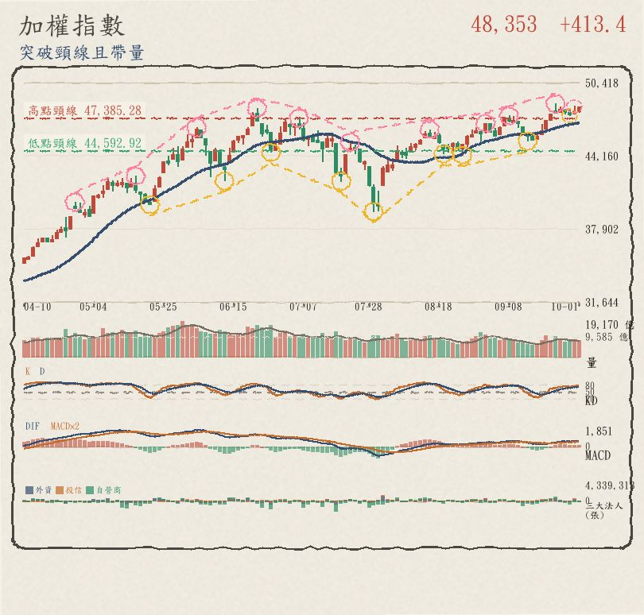
圖說：加權指數日 K（與個股圖相同標記）：黃圈＝轉折低點、粉圈＝轉折高點、虛線小圈＝還沒確認的轉折、藍線＝月線 MA20、水平虛線＝高點／低點頸線。最後一根是資料日當天。
本區塊為公開資料的技術面觀察，不構成投資建議，
不報牌、不預測、不下買賣決策。成交金額為集中市場總成交金額（含 ETF／權證），
與頁首摘要的「上市個股成交金額」口徑不同。標籤是統計，不是評分、也不是推薦。
上市 vs 上櫃（同期快篩）
加權 +0.86% vs 櫃買 +0.42%（同向） → 同向
（兩個市場分開寫，不合併成一個數字；櫃買為 TPEX 公開資料）
櫃買歷史：TPEX 逐日回補 130 根；來源：櫃買中心 www/zh-tw/indexInfo/sectinx（逐日，官方；OpenAPI tpex_index 只回當月）
（TPEX OpenAPI 只回當月，故逐日回補；歷史不足就不算該條均線並標「資料不足」，不用錯數字）
近 20 個交易日大盤狀態回溯（最新在上）（點開看逐日主狀態／量比／量價象限）
用同一支程式回算最近 20 個交易日（主狀態 S1~S8 與量比 20 皆為當日收盤當時的判定，
不是事後調整）；量比 20 未公布的日子寫「—」。
好條件最多的（前 10）
不好條件最多的（前 10）
好條件（8 項）：站上月線、月線向上、底底高、頭頭高、突破頸線、相對大盤強、外資買超、量價攻擊（收紅＋大量）。
不好條件（8 項）：跌破前低、今日下跌、相對大盤弱、在月線之下、量增下跌（出貨）、外資賣超、月線下彎、收盤跌破前一日低點。
兩邊都是同一組資料（日線結構＋當日收盤量價籌碼）算出來的「符合項目數」，只是方向相反；
條件數不是評分、也不是推薦，不構成投資建議。
上升趨勢：底底高 ＋ 頭頭高（18 上市 14／上櫃 4）
量價攻擊（收紅＋大量）（30 上市 21／上櫃 9）
逐檔分析（70 檔）
區間或轉弱 成交金額 517.02 億・全榜第 1 名（上市第 1 名）
好條件 6/8：站上月線、月線向上、突破頸線、相對大盤強、外資買超、量價攻擊（收紅＋大量）
不好條件 0/8：無
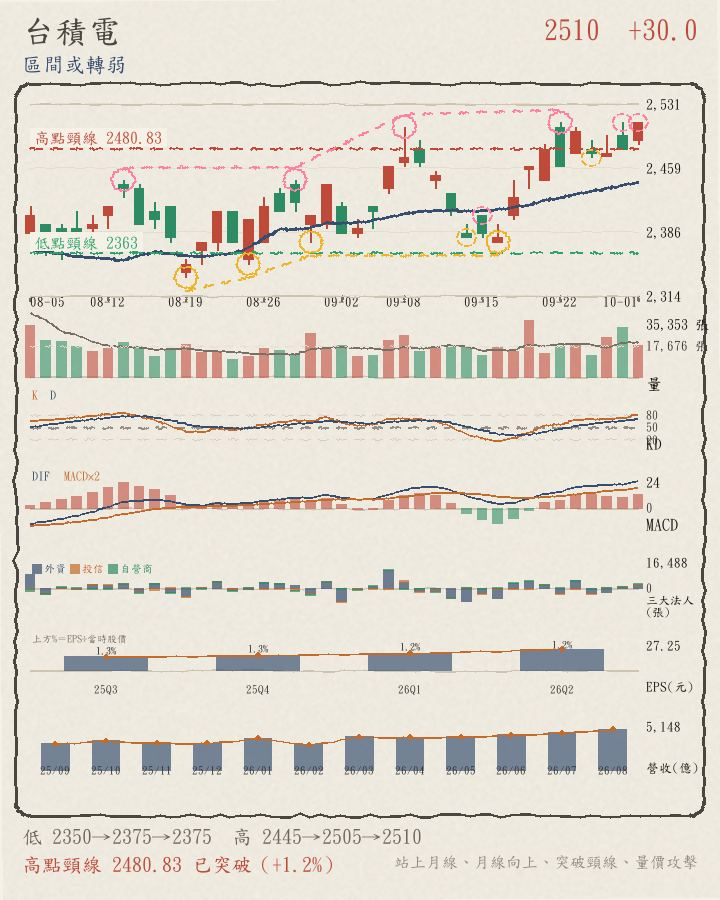
今天收紅、站上月線 2442.5，已站上高點頸線 2480.83，轉折還沒走出明顯方向。
- 月線位置：收盤 2510 在月線 2442.5 之上；5 日線 2488 也在月線之上（短均在上）；月線向上、5 日線向上
- 量能：成交量是 20 日均量的 1.02 倍，跟 20 日均量差不多
- 關鍵價位：高點頸線 2480.83 已站上；最近轉折高點 2510（高於 0.0%）；最近轉折低點 2375（高於 5.7%）
- 轉折結構：低點 2350、2375、2375 與高點 2445、2505、2510 都沒有明顯遞增，屬於區間震盪或轉弱；還沒確認的轉折低點 09-14 2380、09-24 2470；還沒確認的轉折高點 09-30 2510、10-01 2510（圖上虛線小圈）
剛突破前高 成交金額 436.06 億・全榜第 2 名（上市第 2 名）
好條件 6/8：站上月線、月線向上、頭頭高、相對大盤強、外資買超、量價攻擊（收紅＋大量）
不好條件 0/8：無
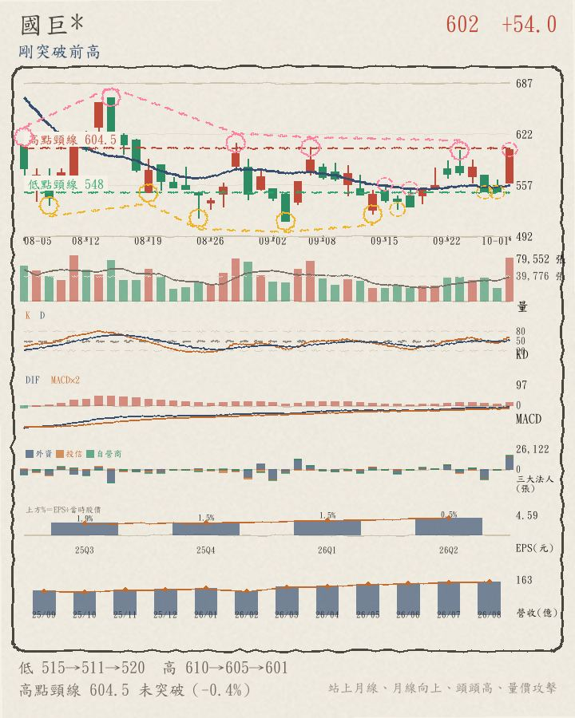
今天帶量收紅、站上月線 556.3，離高點頸線 604.5 還差 0.4%，高點還在墊高（但底部沒同步墊高）。
- 月線位置：收盤 602 在月線 556.3 之上；5 日線 570.2 也在月線之上（短均在上）；月線向上、5 日線向上
- 量能：成交量是 20 日均量的 2.16 倍，比 20 日均量大不少；收紅又量增，量價配合
- 關鍵價位：高點頸線 604.5 還沒突破，差 0.4%；最近轉折高點 601（高於 0.2%）；最近轉折低點 520（高於 15.8%）
- 轉折結構：高點 610、605、601 墊高 0.2%（頭頭高），但低點 515、511、520 沒有同步墊高；還沒確認的轉折低點 09-29 548、09-30 548；還沒確認的轉折高點 09-17 553、10-01 602（圖上虛線小圈）
高點墊高、底部不穩 成交金額 362.78 億・全榜第 3 名（上市第 3 名）
好條件 4/8：站上月線、月線向上、頭頭高、突破頸線
不好條件 4/8：今日下跌、相對大盤弱、量增下跌（出貨）、外資賣超
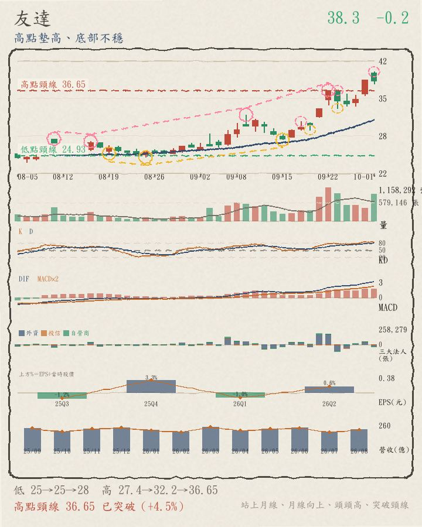
今天帶量收黑、站上月線 31.355，已站上高點頸線 36.65，高點還在墊高（但底部沒同步墊高）。
- 月線位置：收盤 38.3 在月線 31.355 之上；5 日線 36.16 也在月線之上（短均在上）；月線向上、5 日線向上
- 量能：成交量是 20 日均量的 1.96 倍，比 20 日均量大不少；收黑卻量增，量價背離
- 關鍵價位：高點頸線 36.65 已站上；最近轉折高點 36.65（高於 4.5%）；最近轉折低點 27.75（高於 38.0%）
- 轉折結構：高點 27.4、32.2、36.65 墊高 33.8%（頭頭高），但低點 25.25、24.6、27.75 沒有同步墊高；還沒確認的轉折低點 09-18 29.5、09-23 33.4；還沒確認的轉折高點 09-23 36.65、10-01 40（圖上虛線小圈）
剛突破前高 成交金額 321.17 億・全榜第 4 名（上市第 4 名）
好條件 7/8：站上月線、月線向上、頭頭高、突破頸線、相對大盤強、外資買超、量價攻擊（收紅＋大量）
不好條件 0/8：無
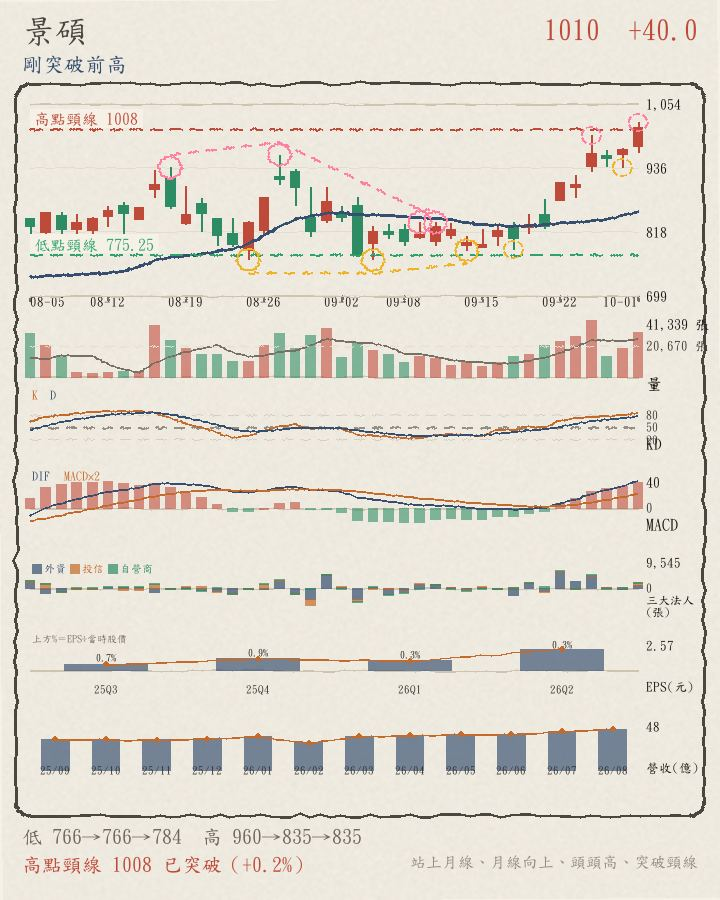
今天帶量收紅、站上月線 855.2，已站上高點頸線 1008，高點還在墊高（但底部沒同步墊高）。
- 月線位置：收盤 1010 在月線 855.2 之上；5 日線 960.6 也在月線之上（短均在上）；月線向上、5 日線向上
- 量能：成交量是 20 日均量的 1.73 倍，比 20 日均量大不少；收紅又量增，量價配合
- 關鍵價位：高點頸線 1008 已站上；最近轉折高點 835（高於 21.0%）；最近轉折低點 784（高於 28.8%）
- 轉折結構：高點 960、835、835 墊高 22.2%（頭頭高），但低點 766、766、784 沒有同步墊高；還沒確認的轉折低點 09-17 785、09-30 937；還沒確認的轉折高點 09-24 996、10-01 1020（圖上虛線小圈）
底部墊高、突破前高 成交金額 281.12 億・全榜第 5 名（上市第 5 名）
好條件 8/8：站上月線、月線向上、底底高、頭頭高、突破頸線、相對大盤強、外資買超、量價攻擊（收紅＋大量）
不好條件 0/8：無
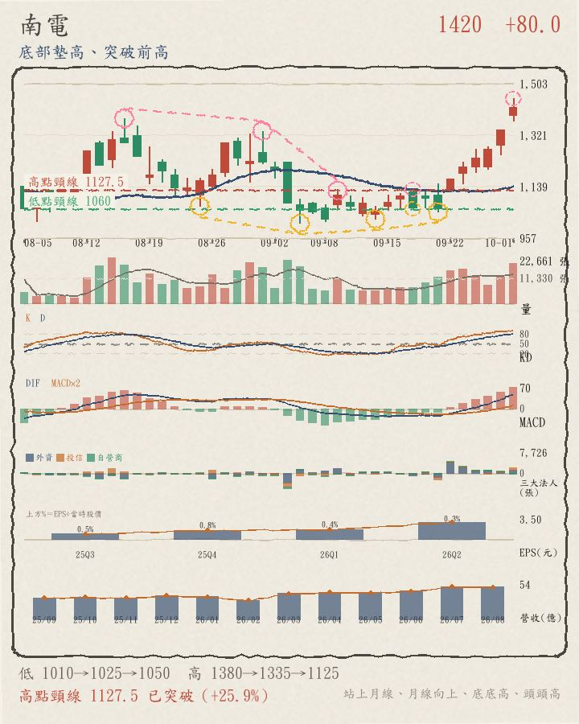
今天帶量收紅、站上月線 1139.25，已站上高點頸線 1127.5，轉折結構仍是底底高＋頭頭高。
- 月線位置：收盤 1420 在月線 1139.25 之上；5 日線 1296 也在月線之上（短均在上）；月線向上、5 日線向上
- 量能：成交量是 20 日均量的 1.78 倍，比 20 日均量大不少；收紅又量增，量價配合
- 關鍵價位：高點頸線 1127.5 已站上；最近轉折高點 1125（高於 26.2%）；最近轉折低點 1050（高於 35.2%）
- 轉折結構：低點 1010、1025、1050 一路墊高 4.0%、高點 1380、1335、1125 也一路墊高 28.9%，是底底高＋頭頭高；還沒確認的轉折低點 09-17 1060；還沒確認的轉折高點 09-17 1130、10-01 1450（圖上虛線小圈）
剛突破前高 成交金額 247.31 億・全榜第 7 名（上市第 6 名）
好條件 4/8：站上月線、月線向上、頭頭高、突破頸線
不好條件 4/8：今日下跌、相對大盤弱、量增下跌（出貨）、外資賣超
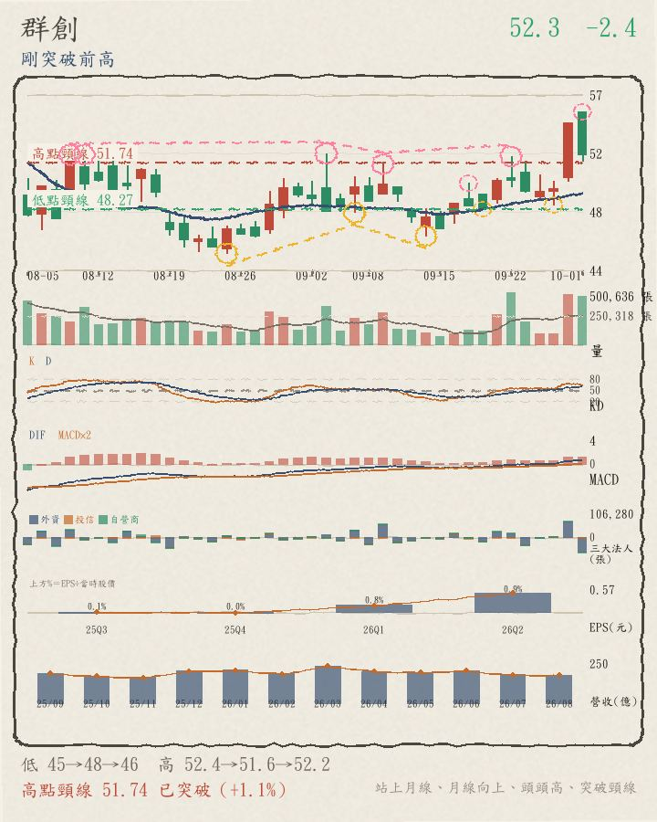
今天帶量收黑、站上月線 49.412，已站上高點頸線 51.74，高點還在墊高（但底部沒同步墊高）。
- 月線位置：收盤 52.3 在月線 49.412 之上；5 日線 51.18 也在月線之上（短均在上）；月線向上、5 日線向上
- 量能：成交量是 20 日均量的 2.28 倍，比 20 日均量大不少；收黑卻量增，量價背離
- 關鍵價位：高點頸線 51.74 已站上；最近轉折高點 52.2（高於 0.2%）；最近轉折低點 46.25（高於 13.1%）
- 轉折結構：高點 52.4、51.6、52.2 墊高 6.3%（頭頭高），但低點 44.95、48、46.25 沒有同步墊高；還沒確認的轉折低點 09-18 48.25、09-29 48.55；還沒確認的轉折高點 09-17 50.2、10-01 55.5（圖上虛線小圈）
高點墊高、底部不穩 成交金額 215.71 億・全榜第 9 名（上市第 7 名）
好條件 4/8：站上月線、月線向上、頭頭高、相對大盤強
不好條件 1/8：外資賣超
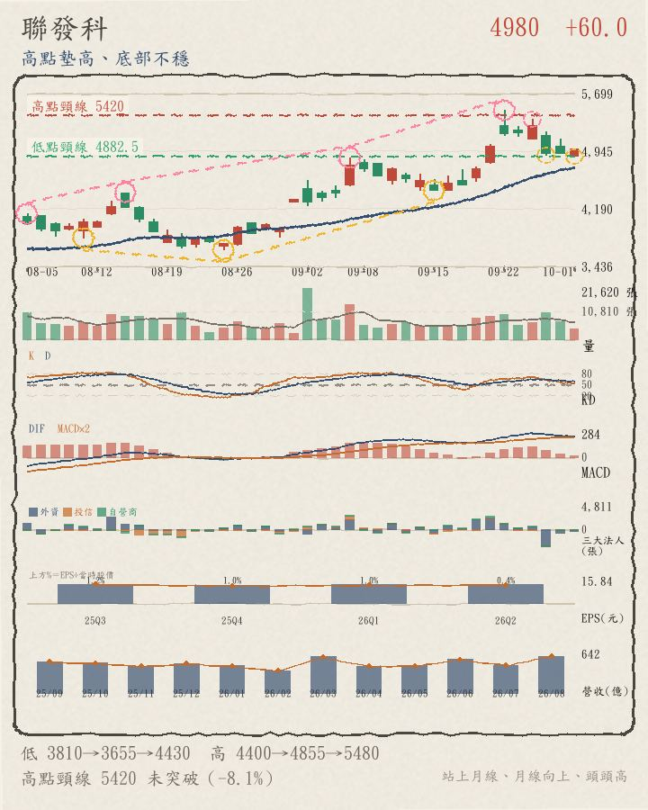
今天收紅、但成交量比平均少、站上月線 4731.5，離高點頸線 5420 還差 8.1%，高點還在墊高（但底部沒同步墊高）。
- 月線位置：收盤 4980 在月線 4731.5 之上；5 日線 5056 也在月線之上（短均在上）；月線向上、5 日線向上
- 量能：成交量是 20 日均量的 0.53 倍，比 20 日均量少很多；收紅但量縮，量價背離
- 關鍵價位：高點頸線 5420 還沒突破，差 8.1%；最近轉折高點 5480（低於 9.1%）；最近轉折低點 4430（高於 12.4%）
- 轉折結構：高點 4400、4855、5480 墊高 24.5%（頭頭高），但低點 3810、3655、4430 沒有同步墊高；還沒確認的轉折低點 09-29 4890、10-01 4875；還沒確認的轉折高點 09-24 5360（圖上虛線小圈）
剛突破前高 成交金額 185.88 億・全榜第 10 名（上市第 8 名）
好條件 5/8：站上月線、月線向上、頭頭高、相對大盤強、外資買超
不好條件 0/8：無
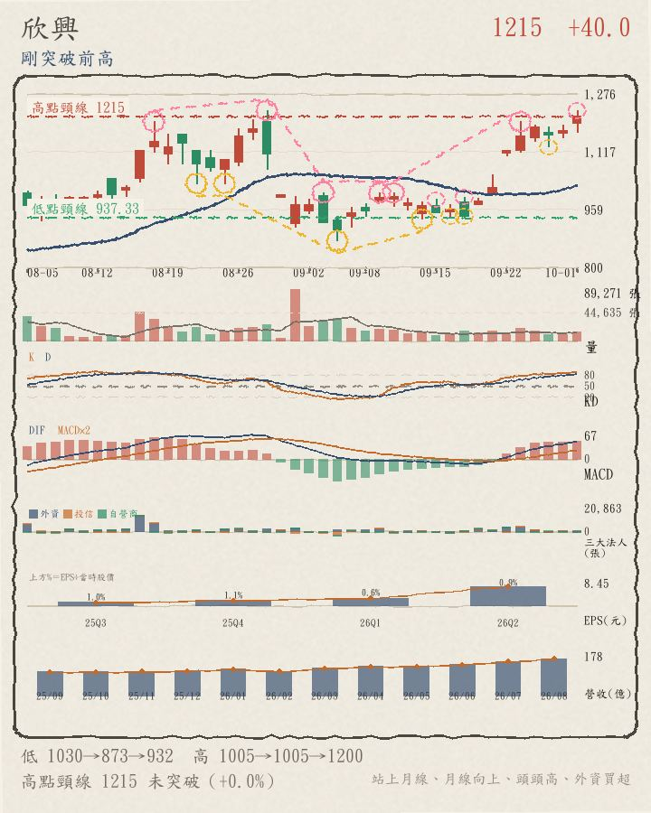
今天收紅、但成交量比平均少、站上月線 1025.4，離高點頸線 1215 還差 0.0%，高點還在墊高（但底部沒同步墊高）。
- 月線位置：收盤 1215 在月線 1025.4 之上；5 日線 1180 也在月線之上（短均在上）；月線向上、5 日線向上
- 量能：成交量是 20 日均量的 0.74 倍，比 20 日均量少很多；收紅但量縮，量價背離
- 關鍵價位：高點頸線 1215 還沒突破，差 0.0%；最近轉折高點 1200（高於 1.2%）；最近轉折低點 932（高於 30.4%）
- 轉折結構：高點 1005、1005、1200 墊高 2.5%（頭頭高），但低點 1030、873、932 沒有同步墊高；還沒確認的轉折低點 09-17 940、09-29 1130；還沒確認的轉折高點 09-17 993、10-01 1230（圖上虛線小圈）
上升趨勢（底底高＋頭頭高） 成交金額 181.29 億・全榜第 11 名（上市第 9 名）
好條件 7/8：站上月線、月線向上、底底高、頭頭高、突破頸線、相對大盤強、外資買超
不好條件 0/8：無
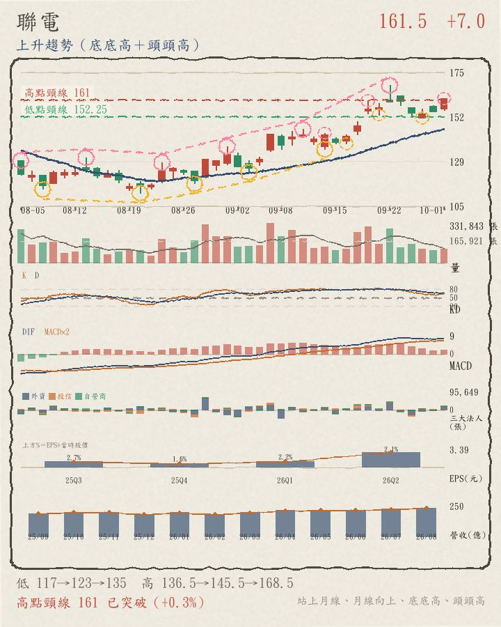
今天收紅、但成交量比平均少、站上月線 145.625，已站上高點頸線 161，轉折結構仍是底底高＋頭頭高。
- 月線位置：收盤 161.5 在月線 145.625 之上；5 日線 156.7 也在月線之上（短均在上）；月線向上、5 日線向上
- 量能：成交量是 20 日均量的 0.63 倍，比 20 日均量少很多；收紅但量縮，量價背離
- 關鍵價位：高點頸線 161 已站上；最近轉折高點 168.5（低於 4.2%）；最近轉折低點 135（高於 19.6%）
- 轉折結構：低點 117、123、135 一路墊高 15.4%、高點 136.5、145.5、168.5 也一路墊高 23.4%，是底底高＋頭頭高；還沒確認的轉折低點 09-21 153、09-29 151.5；還沒確認的轉折高點 09-18 160.5、10-01 161.5（圖上虛線小圈）
底部墊高、突破前高 成交金額 164.62 億・全榜第 12 名（上市第 10 名）
好條件 8/8：站上月線、月線向上、底底高、頭頭高、突破頸線、相對大盤強、外資買超、量價攻擊（收紅＋大量）
不好條件 0/8：無
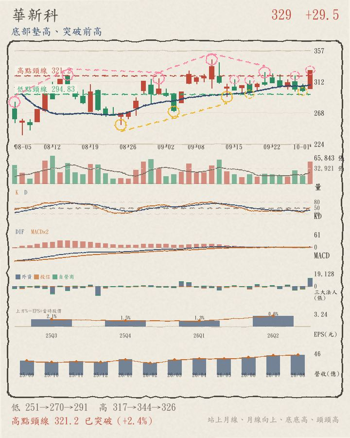
今天帶量收紅、站上月線 307.825，已站上高點頸線 321.2，轉折結構仍是底底高＋頭頭高。
- 月線位置：收盤 329 在月線 307.825 之上；5 日線 309.6 也在月線之上（短均在上）；月線向上、5 日線向上
- 量能：成交量是 20 日均量的 1.98 倍，比 20 日均量大不少；收紅又量增，量價配合
- 關鍵價位：高點頸線 321.2 已站上；最近轉折高點 326（高於 0.9%）；最近轉折低點 291（高於 13.1%）
- 轉折結構：低點 251、270、291 一路墊高 15.9%、高點 317、344、326 也一路墊高 0.9%，是底底高＋頭頭高；還沒確認的轉折低點 09-17 295、09-30 298.5；還沒確認的轉折高點 09-29 321、10-01 329（圖上虛線小圈）
底部墊高、突破前高 成交金額 161.1 億・全榜第 13 名（上市第 11 名）
好條件 6/8：站上月線、月線向上、底底高、頭頭高、外資買超、量價攻擊（收紅＋大量）
不好條件 1/8：相對大盤弱
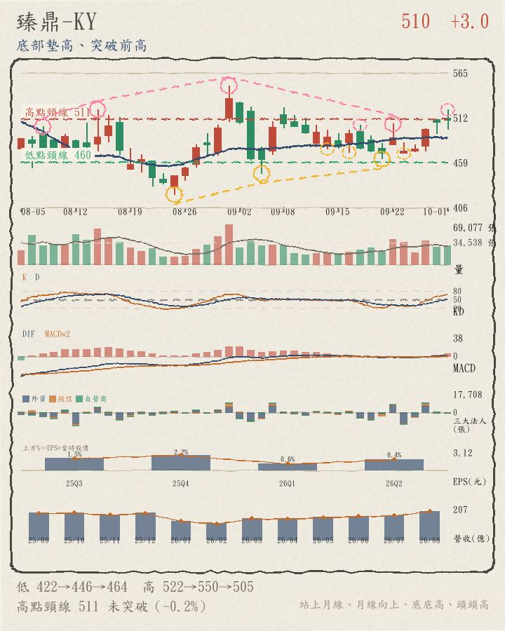
今天帶量收紅、站上月線 488.2，離高點頸線 511 還差 0.2%，轉折結構仍是底底高＋頭頭高。
- 月線位置：收盤 510 在月線 488.2 之上；5 日線 492.8 也在月線之上（短均在上）；月線向上、5 日線向上
- 量能：成交量是 20 日均量的 1.06 倍，比 20 日均量大一些；收紅又量增，量價配合
- 關鍵價位：高點頸線 511 還沒突破，差 0.2%；最近轉折高點 505（高於 1.0%）；最近轉折低點 463.5（高於 10.0%）
- 轉折結構：低點 421.5、446.5、463.5 一路墊高 10.0%、高點 522、550、505 也一路墊高 3.4%，是底底高＋頭頭高；還沒確認的轉折低點 09-16 471、09-23 470；還沒確認的轉折高點 09-17 504、10-01 522（圖上虛線小圈）
上升趨勢（底底高＋頭頭高） 成交金額 154.85 億・全榜第 14 名（上市第 12 名）
好條件 7/8：站上月線、月線向上、底底高、頭頭高、相對大盤強、外資買超、量價攻擊（收紅＋大量）
不好條件 0/8：無
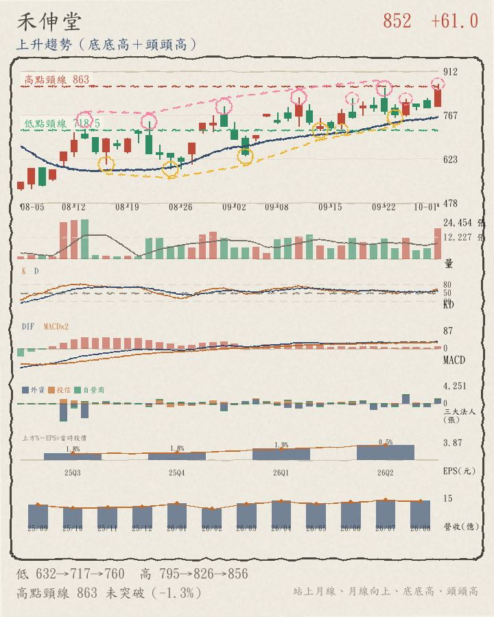
今天帶量收紅、站上月線 761.1，離高點頸線 863 還差 1.3%，轉折結構仍是底底高＋頭頭高。
- 月線位置：收盤 852 在月線 761.1 之上；5 日線 803.4 也在月線之上（短均在上）；月線向上、5 日線向上
- 量能：成交量是 20 日均量的 2.00 倍，比 20 日均量大不少；收紅又量增，量價配合
- 關鍵價位：高點頸線 863 還沒突破，差 1.3%；最近轉折高點 856（低於 0.5%）；最近轉折低點 760（高於 12.1%）
- 轉折結構：低點 632、717、760 一路墊高 20.3%、高點 795、826、856 也一路墊高 7.7%，是底底高＋頭頭高；還沒確認的轉折低點 09-16 720；還沒確認的轉折高點 09-24 820、10-01 870（圖上虛線小圈）
剛突破前高 成交金額 145.61 億・全榜第 15 名（上市第 13 名）
好條件 4/8：站上月線、月線向上、頭頭高、突破頸線
不好條件 3/8：今日下跌、相對大盤弱、外資賣超
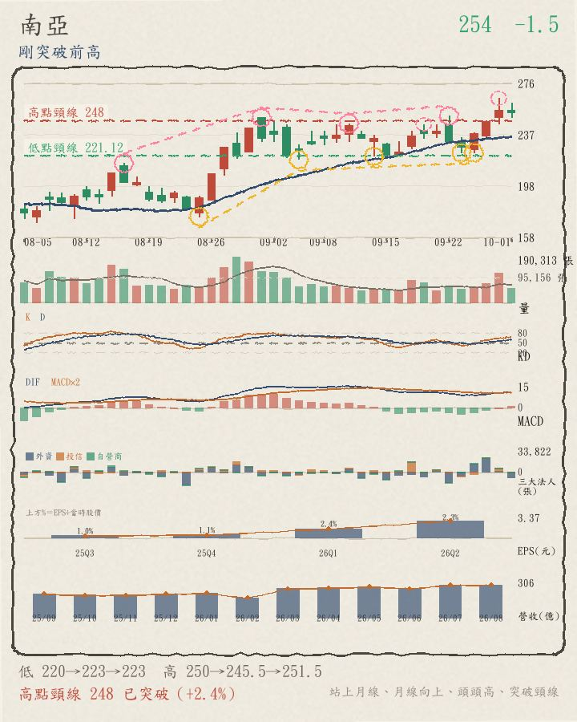
今天收黑、成交量也比平均少、站上月線 235.55，已站上高點頸線 248，高點還在墊高（但底部沒同步墊高）。
- 月線位置：收盤 254 在月線 235.55 之上；5 日線 244.4 也在月線之上（短均在上）；月線向上、5 日線向上
- 量能：成交量是 20 日均量的 0.76 倍，比 20 日均量少很多
- 關鍵價位：高點頸線 248 已站上；最近轉折高點 251.5（高於 1.0%）；最近轉折低點 223（高於 13.9%）
- 轉折結構：高點 250、245.5、251.5 墊高 5.4%（頭頭高），但低點 220.5、223、223 沒有同步墊高；還沒確認的轉折高點 09-18 245、09-30 265（圖上虛線小圈）
區間或轉弱 成交金額 140.11 億・全榜第 17 名（上市第 14 名）
好條件 2/8：站上月線、外資買超
不好條件 2/8：相對大盤弱、月線下彎
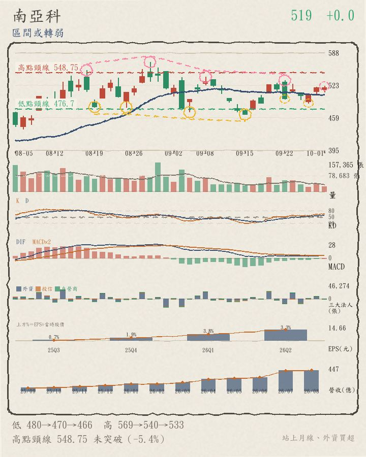
今天收黑、成交量也比平均少、站上月線 504.475，離高點頸線 548.75 還差 5.4%，轉折還沒走出明顯方向。
- 月線位置：收盤 519 在月線 504.475 之上；5 日線 512.4 也在月線之上（短均在上）；月線走平或向下、5 日線向上
- 量能：成交量是 20 日均量的 0.51 倍，比 20 日均量少很多
- 關鍵價位：高點頸線 548.75 還沒突破，差 5.4%；最近轉折高點 533（低於 2.6%）；最近轉折低點 465.5（高於 11.5%）
- 轉折結構：低點 480、470、465.5 與高點 569、540、533 都沒有明顯遞增，屬於區間震盪或轉弱；還沒確認的轉折低點 09-22 496、09-29 488；還沒確認的轉折高點 10-01 522（圖上虛線小圈）
區間或轉弱 成交金額 138.7 億・全榜第 18 名（上市第 15 名）
好條件 3/8：相對大盤強、外資買超、量價攻擊（收紅＋大量）
不好條件 2/8：在月線之下、月線下彎
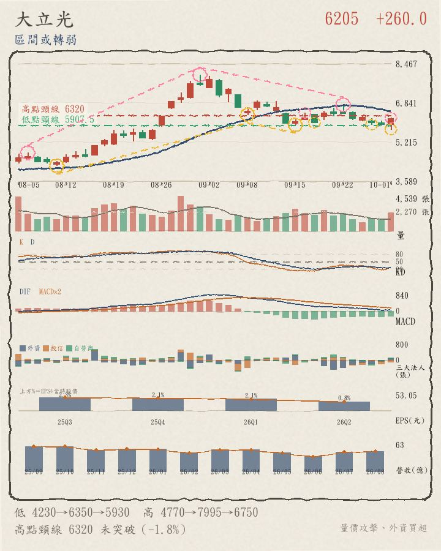
今天帶量收紅、跌破月線 6495.25，離高點頸線 6320 還差 1.8%，轉折還沒走出明顯方向。
- 月線位置：收盤 6205 在月線 6495.25 之下；5 日線 6121 也在月線之下（短均在下）；月線走平或向下、5 日線走平或向下
- 量能：成交量是 20 日均量的 1.20 倍，比 20 日均量大不少；收紅又量增，量價配合
- 關鍵價位：高點頸線 6320 還沒突破，差 1.8%；最近轉折高點 6750（低於 8.1%）；最近轉折低點 5930（高於 4.6%）
- 轉折結構：低點 4230、6350、5930 與高點 4770、7995、6750 都沒有明顯遞增，屬於區間震盪或轉弱；還沒確認的轉折低點 09-29 5940、10-01 5740；還沒確認的轉折高點 09-16 6415、10-01 6225（圖上虛線小圈）
區間或轉弱 成交金額 115.94 億・全榜第 20 名（上市第 16 名）
好條件 2/8：站上月線、外資買超
不好條件 2/8：相對大盤弱、月線下彎
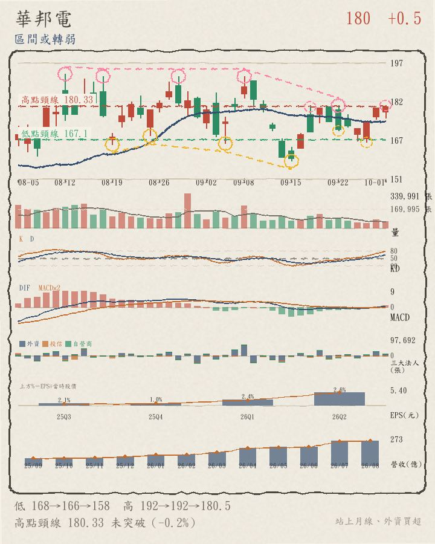
今天收紅、但成交量比平均少、站上月線 174.225，離高點頸線 180.33 還差 0.2%，轉折還沒走出明顯方向。
- 月線位置：收盤 180 在月線 174.225 之上；5 日線 175.5 也在月線之上（短均在上）；月線走平或向下、5 日線向上
- 量能：成交量是 20 日均量的 0.64 倍，比 20 日均量少很多；收紅但量縮，量價背離
- 關鍵價位：高點頸線 180.33 還沒突破，差 0.2%；最近轉折高點 180.5（低於 0.3%）；最近轉折低點 158.5（高於 13.6%）
- 轉折結構：低點 168.5、165.5、158.5 與高點 192、192、180.5 都沒有明顯遞增，屬於區間震盪或轉弱；還沒確認的轉折低點 09-22 170.5、09-29 166；還沒確認的轉折高點 09-17 180、10-01 180.5（圖上虛線小圈）
高點墊高、底部不穩 成交金額 115.87 億・全榜第 21 名（上市第 17 名）
好條件 3/8：站上月線、月線向上、頭頭高
不好條件 2/8：相對大盤弱、外資賣超
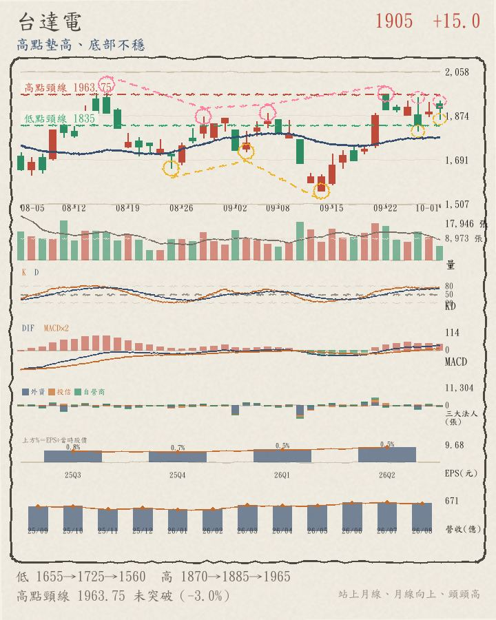
今天收紅、但成交量比平均少、站上月線 1784.75，離高點頸線 1963.75 還差 3.0%，高點還在墊高（但底部沒同步墊高）。
- 月線位置：收盤 1905 在月線 1784.75 之上；5 日線 1888 也在月線之上（短均在上）；月線向上、5 日線向上
- 量能：成交量是 20 日均量的 0.57 倍，比 20 日均量少很多；收紅但量縮，量價背離
- 關鍵價位：高點頸線 1963.75 還沒突破，差 3.0%；最近轉折高點 1965（低於 3.1%）；最近轉折低點 1560（高於 22.1%）
- 轉折結構：高點 1870、1885、1965 墊高 5.1%（頭頭高），但低點 1655、1725、1560 沒有同步墊高；還沒確認的轉折低點 09-29 1810、10-01 1860；還沒確認的轉折高點 09-29 1950、10-01 1935（圖上虛線小圈）
區間或轉弱 成交金額 113.38 億・全榜第 22 名（上市第 18 名）
好條件 4/8：站上月線、月線向上、相對大盤強、量價攻擊（收紅＋大量）
不好條件 1/8：外資賣超
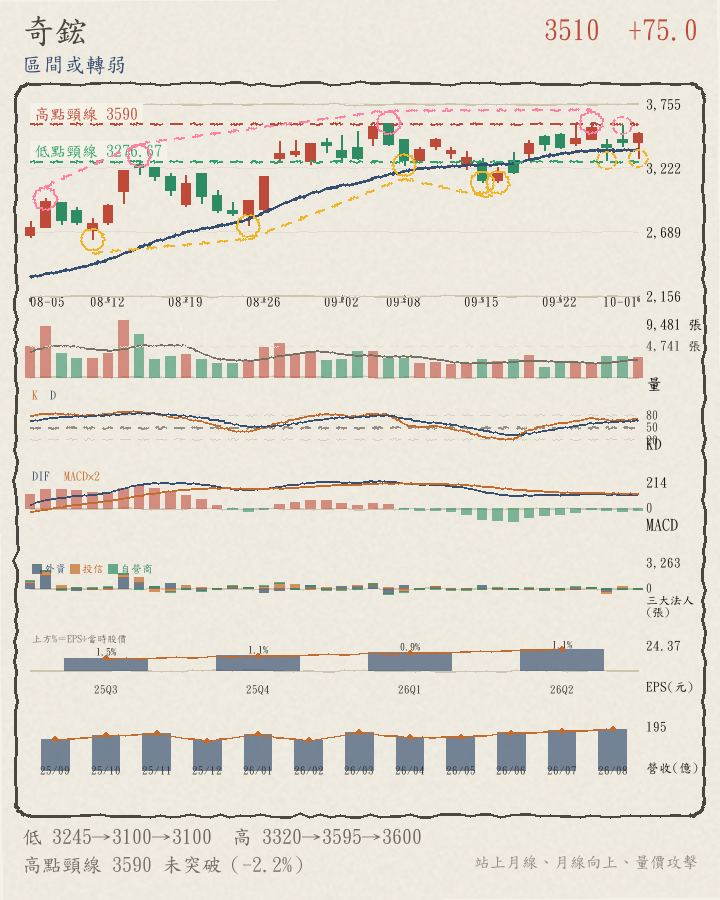
今天帶量收紅、站上月線 3374.25，離高點頸線 3590 還差 2.2%，轉折還沒走出明顯方向。
- 月線位置：收盤 3510 在月線 3374.25 之上；5 日線 3474 也在月線之上（短均在上）；月線向上、5 日線向上
- 量能：成交量是 20 日均量的 1.17 倍，比 20 日均量大不少；收紅又量增，量價配合
- 關鍵價位：高點頸線 3590 還沒突破，差 2.2%；最近轉折高點 3600（低於 2.5%）；最近轉折低點 3100（高於 13.2%）
- 轉折結構：低點 3245、3100、3100 與高點 3320、3595、3600 都沒有明顯遞增，屬於區間震盪或轉弱；還沒確認的轉折低點 09-29 3285、10-01 3300；還沒確認的轉折高點 09-30 3575（圖上虛線小圈）
剛突破前高 成交金額 112.16 億・全榜第 23 名（上市第 19 名）
好條件 7/8：站上月線、月線向上、頭頭高、突破頸線、相對大盤強、外資買超、量價攻擊（收紅＋大量）
不好條件 0/8：無
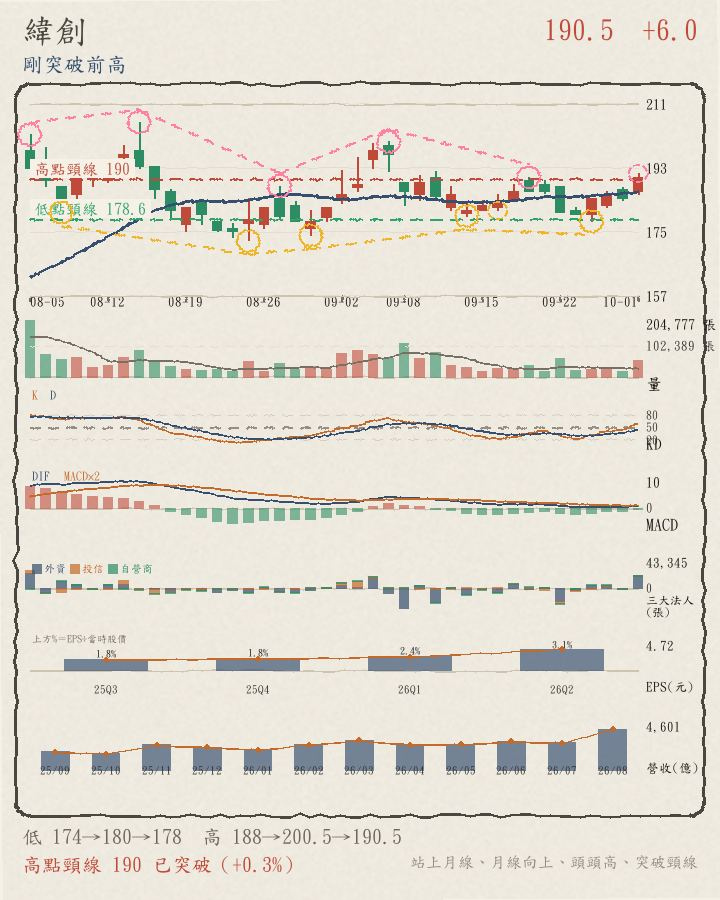
今天帶量收紅、站上月線 186.325，已站上高點頸線 190，高點還在墊高（但底部沒同步墊高）。
- 月線位置：收盤 190.5 在月線 186.325 之上；5 日線 185 也在月線之下（短均在下）；月線向上、5 日線向上
- 量能：成交量是 20 日均量的 1.16 倍，比 20 日均量大不少；收紅又量增，量價配合
- 關鍵價位：高點頸線 190 已站上；最近轉折高點 190.5（高於 0.0%）；最近轉折低點 178（高於 7.0%）
- 轉折結構：高點 188、200.5、190.5 墊高 0.5%（頭頭高），但低點 174、179.5、178 沒有同步墊高；還沒確認的轉折低點 09-16 181；還沒確認的轉折高點 10-01 191.5（圖上虛線小圈）
區間或轉弱 成交金額 109.87 億・全榜第 24 名（上市第 20 名）
好條件 3/8：相對大盤強、外資買超、量價攻擊（收紅＋大量）
不好條件 2/8：在月線之下、月線下彎
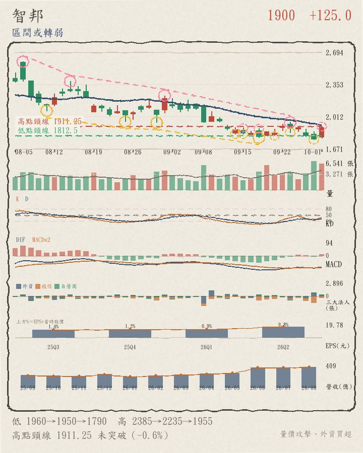
今天帶量收紅、跌破月線 1924.25，離高點頸線 1911.25 還差 0.6%，轉折還沒走出明顯方向。
- 月線位置：收盤 1900 在月線 1924.25 之下；5 日線 1854 也在月線之下（短均在下）；月線走平或向下、5 日線向上
- 量能：成交量是 20 日均量的 1.68 倍，比 20 日均量大不少；收紅又量增，量價配合
- 關鍵價位：高點頸線 1911.25 還沒突破，差 0.6%；最近轉折高點 1955（低於 2.8%）；最近轉折低點 1790（高於 6.1%）
- 轉折結構：低點 1960、1950、1790 與高點 2385、2235、1955 都沒有明顯遞增，屬於區間震盪或轉弱；還沒確認的轉折低點 09-23 1845、09-30 1770；還沒確認的轉折高點 09-17 1885、10-01 1910（圖上虛線小圈）
剛突破前高 成交金額 99.97 億・全榜第 26 名（上市第 21 名）
好條件 2/8：站上月線、頭頭高
不好條件 5/8：今日下跌、相對大盤弱、量增下跌（出貨）、外資賣超、月線下彎
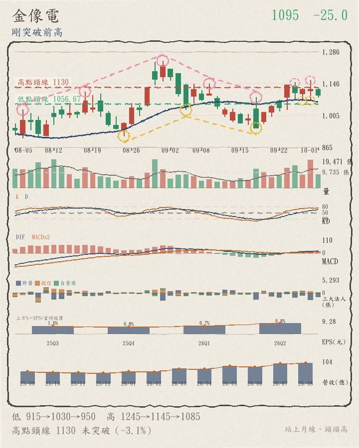
今天收黑、站上月線 1065.45，離高點頸線 1130 還差 3.1%，高點還在墊高（但底部沒同步墊高）。
- 月線位置：收盤 1095 在月線 1065.45 之上；5 日線 1116 也在月線之上（短均在上）；月線走平或向下、5 日線向上
- 量能：成交量是 20 日均量的 1.04 倍，跟 20 日均量差不多
- 關鍵價位：高點頸線 1130 還沒突破，差 3.1%；最近轉折高點 1085（高於 0.9%）；最近轉折低點 950（高於 15.3%）
- 轉折結構：高點 1245、1145、1085 墊高 6.9%（頭頭高），但低點 915、1030、950 沒有同步墊高；還沒確認的轉折低點 09-29 1070、09-30 1070；還沒確認的轉折高點 09-24 1150、09-30 1160（圖上虛線小圈）
剛突破前高 成交金額 90.97 億・全榜第 28 名（上市第 22 名）
好條件 6/8：站上月線、月線向上、頭頭高、突破頸線、相對大盤強、外資買超
不好條件 0/8：無
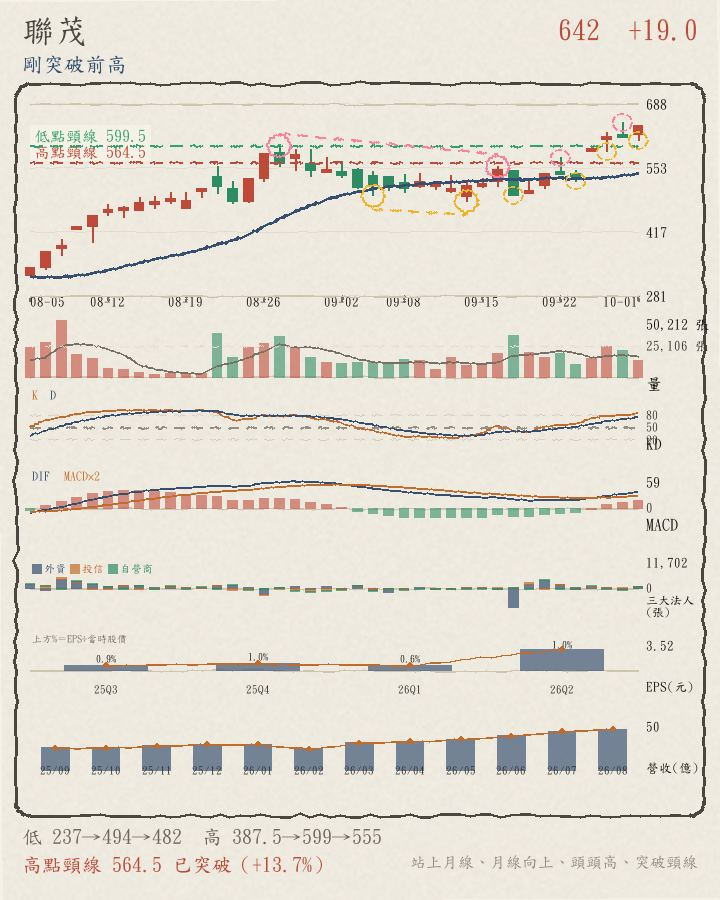
今天收紅、但成交量比平均少、站上月線 541.45，已站上高點頸線 564.5，高點還在墊高（但底部沒同步墊高）。
- 月線位置：收盤 642 在月線 541.45 之上；5 日線 604.2 也在月線之上（短均在上）；月線向上、5 日線向上
- 量能：成交量是 20 日均量的 0.87 倍，比 20 日均量少一些；收紅但量縮，量價背離
- 關鍵價位：高點頸線 564.5 已站上；最近轉折高點 555（高於 15.7%）；最近轉折低點 482（高於 33.2%）
- 轉折結構：高點 387.5、599、555 墊高 16.9%（頭頭高），但低點 237、493.5、482 沒有同步墊高；還沒確認的轉折低點 09-29 588、10-01 611；還沒確認的轉折高點 09-22 574、09-30 649（圖上虛線小圈）
區間或轉弱 成交金額 88.13 億・全榜第 29 名（上市第 23 名）
好條件 2/8：站上月線、突破頸線
不好條件 5/8：今日下跌、相對大盤弱、量增下跌（出貨）、外資賣超、月線下彎
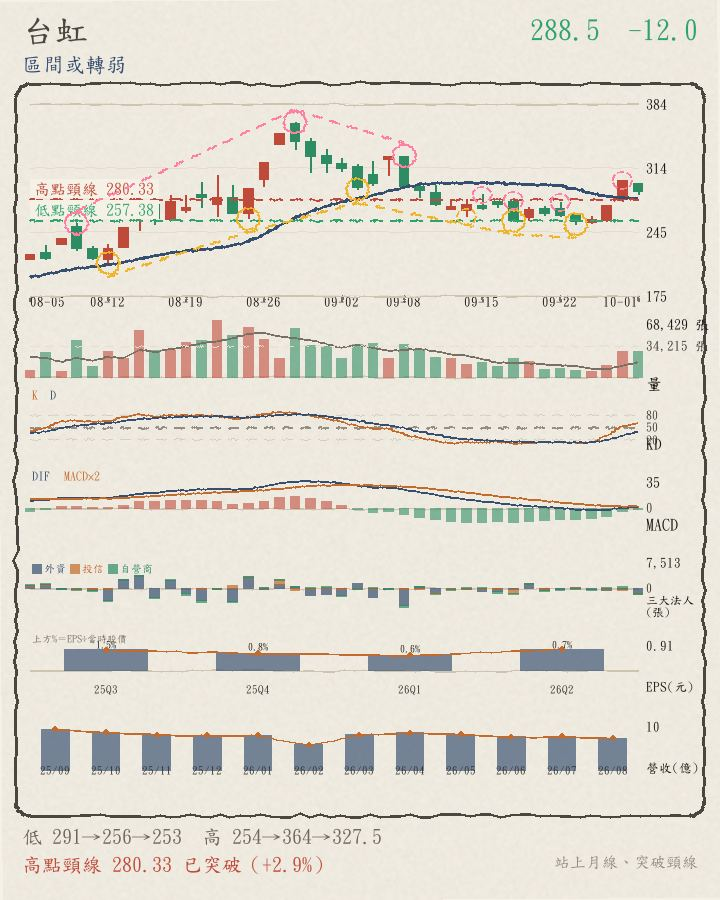
今天帶量收黑、站上月線 280.625，已站上高點頸線 280.33，轉折還沒走出明顯方向。
- 月線位置：收盤 288.5 在月線 280.625 之上；5 日線 275.4 也在月線之下（短均在下）；月線走平或向下、5 日線向上
- 量能：成交量是 20 日均量的 1.37 倍，比 20 日均量大不少；收黑卻量增，量價背離
- 關鍵價位：高點頸線 280.33 已站上；最近轉折高點 327.5（低於 11.9%）；最近轉折低點 253（高於 14.0%）
- 轉折結構：低點 291、256.5、253 與高點 254、364、327.5 都沒有明顯遞增，屬於區間震盪或轉弱；還沒確認的轉折低點 09-14 261；還沒確認的轉折高點 09-22 277、09-30 300.5（圖上虛線小圈）
上升趨勢（底底高＋頭頭高） 成交金額 85.73 億・全榜第 31 名（上市第 24 名）
好條件 8/8：站上月線、月線向上、底底高、頭頭高、突破頸線、相對大盤強、外資買超、量價攻擊（收紅＋大量）
不好條件 0/8：無
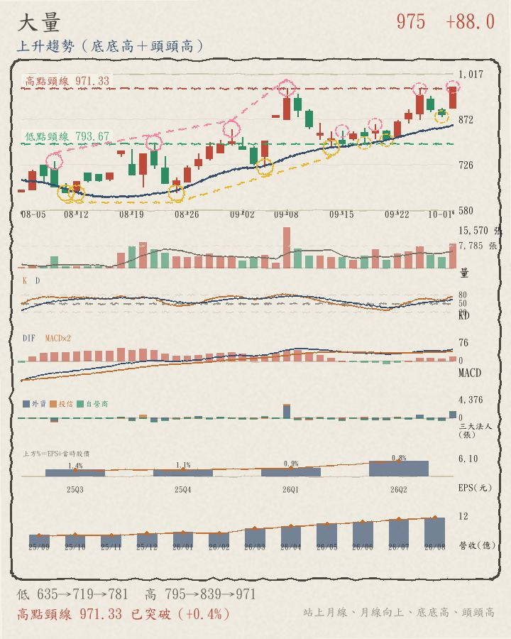
今天帶量收紅、站上月線 852.75，已站上高點頸線 971.33，轉折結構仍是底底高＋頭頭高。
- 月線位置：收盤 975 在月線 852.75 之上；5 日線 920.8 也在月線之上（短均在上）；月線向上、5 日線向上
- 量能：成交量是 20 日均量的 1.76 倍，比 20 日均量大不少；收紅又量增，量價配合
- 關鍵價位：高點頸線 971.33 已站上；最近轉折高點 971（高於 0.4%）；最近轉折低點 781（高於 24.8%）
- 轉折結構：低點 635、719、781 一路墊高 23.0%、高點 795、839、971 也一路墊高 22.1%，是底底高＋頭頭高；還沒確認的轉折低點 09-21 805、09-30 879；還沒確認的轉折高點 09-24 968、10-01 975（圖上虛線小圈）
底部墊高、突破前高 成交金額 83.86 億・全榜第 32 名（上市第 25 名）
好條件 4/8：站上月線、月線向上、底底高、頭頭高
不好條件 4/8：今日下跌、相對大盤弱、量增下跌（出貨）、外資賣超
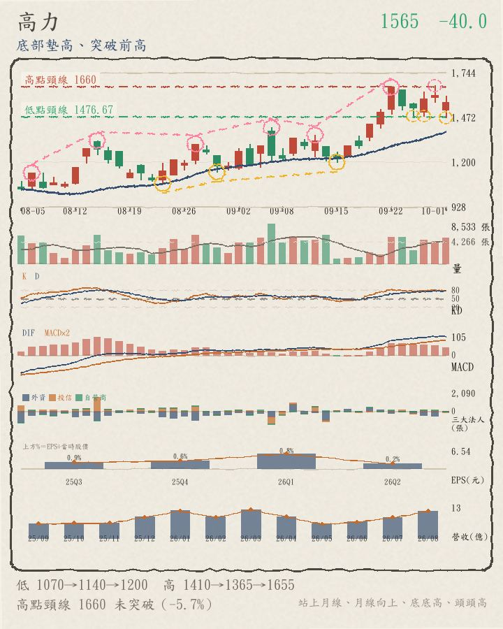
今天帶量收黑、站上月線 1383，離高點頸線 1660 還差 5.7%，轉折結構仍是底底高＋頭頭高。
- 月線位置：收盤 1565 在月線 1383 之上；5 日線 1565 也在月線之上（短均在上）；月線向上、5 日線向上
- 量能：成交量是 20 日均量的 1.32 倍，比 20 日均量大不少；收黑卻量增，量價背離
- 關鍵價位：高點頸線 1660 還沒突破，差 5.7%；最近轉折高點 1655（低於 5.4%）；最近轉折低點 1200（高於 30.4%）
- 轉折結構：低點 1070、1140、1200 一路墊高 12.1%、高點 1410、1365、1655 也一路墊高 0.6%，是底底高＋頭頭高；還沒確認的轉折低點 09-29 1480、10-01 1470；還沒確認的轉折高點 09-30 1665（圖上虛線小圈）
區間或轉弱 成交金額 81.63 億・全榜第 33 名（上市第 26 名）
好條件 5/8：站上月線、月線向上、相對大盤強、外資買超、量價攻擊（收紅＋大量）
不好條件 0/8：無
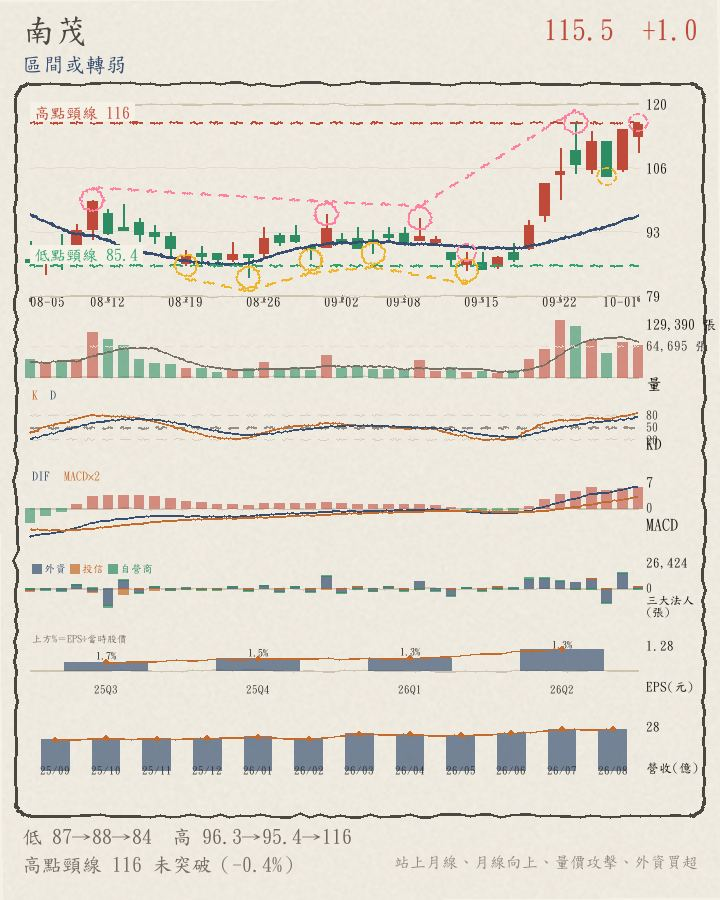
今天帶量收紅、站上月線 96.045，離高點頸線 116 還差 0.4%，轉折還沒走出明顯方向。
- 月線位置：收盤 115.5 在月線 96.045 之上；5 日線 110.7 也在月線之上（短均在上）；月線向上、5 日線向上
- 量能：成交量是 20 日均量的 1.76 倍，比 20 日均量大不少；收紅又量增，量價配合
- 關鍵價位：高點頸線 116 還沒突破，差 0.4%；最近轉折高點 116（低於 0.4%）；最近轉折低點 84.3（高於 37.0%）
- 轉折結構：低點 86.6、87.9、84.3 與高點 96.3、95.4、116 都沒有明顯遞增，屬於區間震盪或轉弱；還沒確認的轉折低點 09-29 104.5；還沒確認的轉折高點 09-14 88.2、10-01 116（圖上虛線小圈）
剛突破前高 成交金額 78.46 億・全榜第 34 名（上市第 27 名）
好條件 4/8：站上月線、月線向上、頭頭高、突破頸線
不好條件 3/8：今日下跌、相對大盤弱、外資賣超
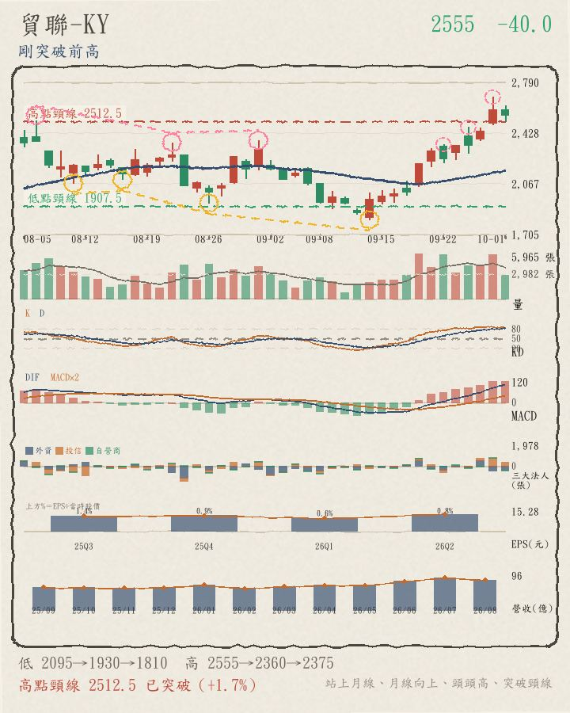
今天收黑、成交量也比平均少、站上月線 2158.5，已站上高點頸線 2512.5，高點還在墊高（但底部沒同步墊高）。
- 月線位置：收盤 2555 在月線 2158.5 之上；5 日線 2455 也在月線之上（短均在上）；月線向上、5 日線向上
- 量能：成交量是 20 日均量的 0.94 倍，比 20 日均量少一些
- 關鍵價位：高點頸線 2512.5 已站上；最近轉折高點 2375（高於 7.6%）；最近轉折低點 1810（高於 41.2%）
- 轉折結構：高點 2555、2360、2375 墊高 13.1%（頭頭高），但低點 2095、1930、1810 沒有同步墊高；還沒確認的轉折高點 09-24 2470、09-30 2685（圖上虛線小圈）
區間或轉弱 成交金額 77.21 億・全榜第 35 名（上市第 28 名）
好條件 5/8：站上月線、月線向上、突破頸線、相對大盤強、外資買超
不好條件 0/8：無
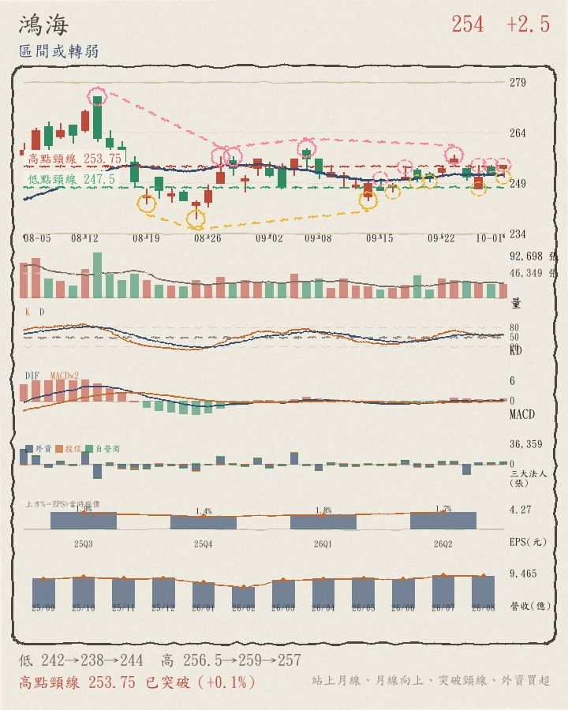
今天收紅、但成交量比平均少、站上月線 251.125，已站上高點頸線 253.75，轉折還沒走出明顯方向。
- 月線位置：收盤 254 在月線 251.125 之上；5 日線 252.5 也在月線之上（短均在上）；月線向上、5 日線向上
- 量能：成交量是 20 日均量的 0.90 倍，比 20 日均量少一些；收紅但量縮，量價背離
- 關鍵價位：高點頸線 253.75 已站上；最近轉折高點 257（低於 1.2%）；最近轉折低點 243.5（高於 4.3%）
- 轉折結構：低點 242.5、238、243.5 與高點 256.5、259、257 都沒有明顯遞增，屬於區間震盪或轉弱；還沒確認的轉折低點 09-29 247、10-01 250.5；還沒確認的轉折高點 09-30 254、10-01 254（圖上虛線小圈）
剛突破前高 成交金額 75.07 億・全榜第 36 名（上市第 29 名）
好條件 6/8：站上月線、月線向上、頭頭高、相對大盤強、外資買超、量價攻擊（收紅＋大量）
不好條件 0/8：無
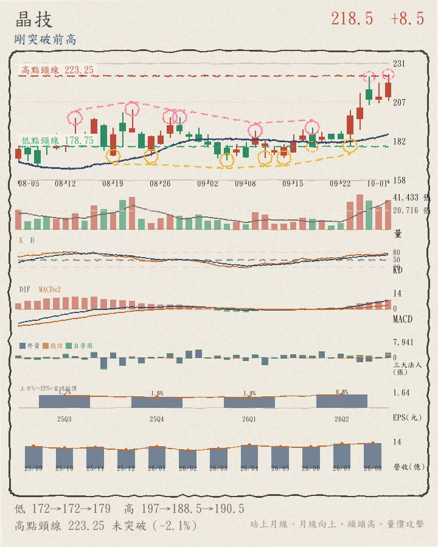
今天帶量收紅、站上月線 186.475，離高點頸線 223.25 還差 2.1%，高點還在墊高（但底部沒同步墊高）。
- 月線位置：收盤 218.5 在月線 186.475 之上；5 日線 207.6 也在月線之上（短均在上）；月線向上、5 日線向上
- 量能：成交量是 20 日均量的 2.33 倍，比 20 日均量大不少；收紅又量增，量價配合
- 關鍵價位：高點頸線 223.25 還沒突破，差 2.1%；最近轉折高點 190.5（高於 14.7%）；最近轉折低點 179（高於 22.1%）
- 轉折結構：高點 197、188.5、190.5 墊高 17.6%（頭頭高），但低點 171.5、171.5、179 沒有同步墊高；還沒確認的轉折低點 09-17 178.5；還沒確認的轉折高點 09-29 222.5、10-01 224（圖上虛線小圈）
騰輝電子-KY 6672 上市
405.5 +36.5
底部墊高、突破前高 成交金額 71.46 億・全榜第 37 名（上市第 30 名）
好條件 8/8：站上月線、月線向上、底底高、頭頭高、突破頸線、相對大盤強、外資買超、量價攻擊（收紅＋大量）
不好條件 0/8：無
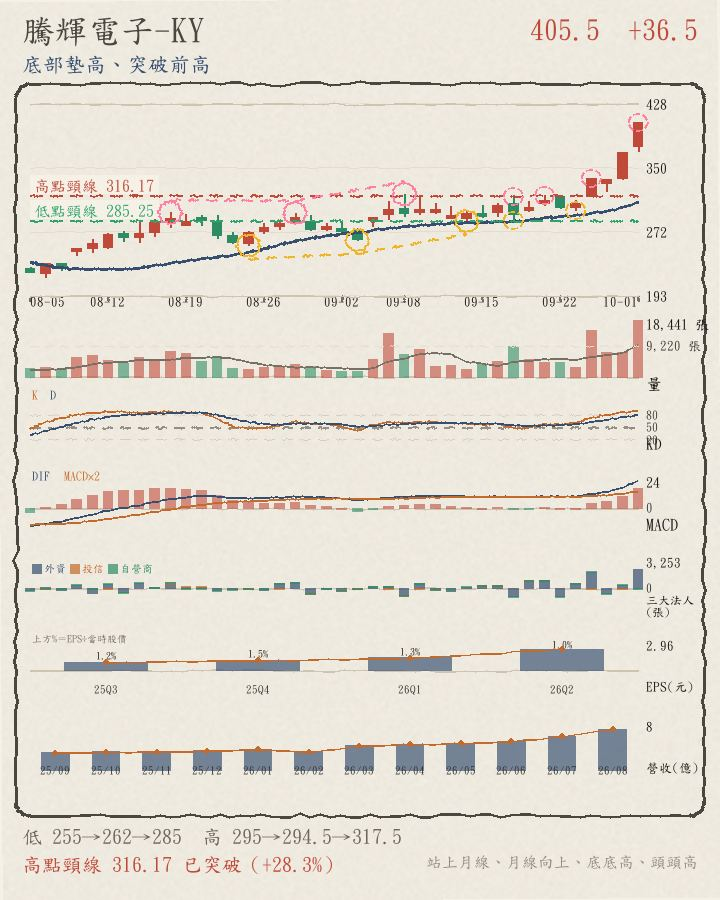
今天帶量收紅、站上月線 307.975，已站上高點頸線 316.17，轉折結構仍是底底高＋頭頭高。
- 月線位置：收盤 405.5 在月線 307.975 之上；5 日線 350.9 也在月線之上（短均在上）；月線向上、5 日線向上
- 量能：成交量是 20 日均量的 3.08 倍，比 20 日均量大不少；收紅又量增，量價配合
- 關鍵價位：高點頸線 316.17 已站上；最近轉折高點 317.5（高於 27.7%）；最近轉折低點 285（高於 42.3%）
- 轉折結構：低點 255、261.5、285 一路墊高 11.8%、高點 295、294.5、317.5 也一路墊高 27.7%，是底底高＋頭頭高；還沒確認的轉折低點 09-17 285.5、09-23 298；還沒確認的轉折高點 09-24 337.5、10-01 405.5（圖上虛線小圈）
剛突破前高 成交金額 68.81 億・全榜第 38 名（上市第 31 名）
好條件 4/8：站上月線、月線向上、頭頭高、突破頸線
不好條件 3/8：今日下跌、相對大盤弱、外資賣超
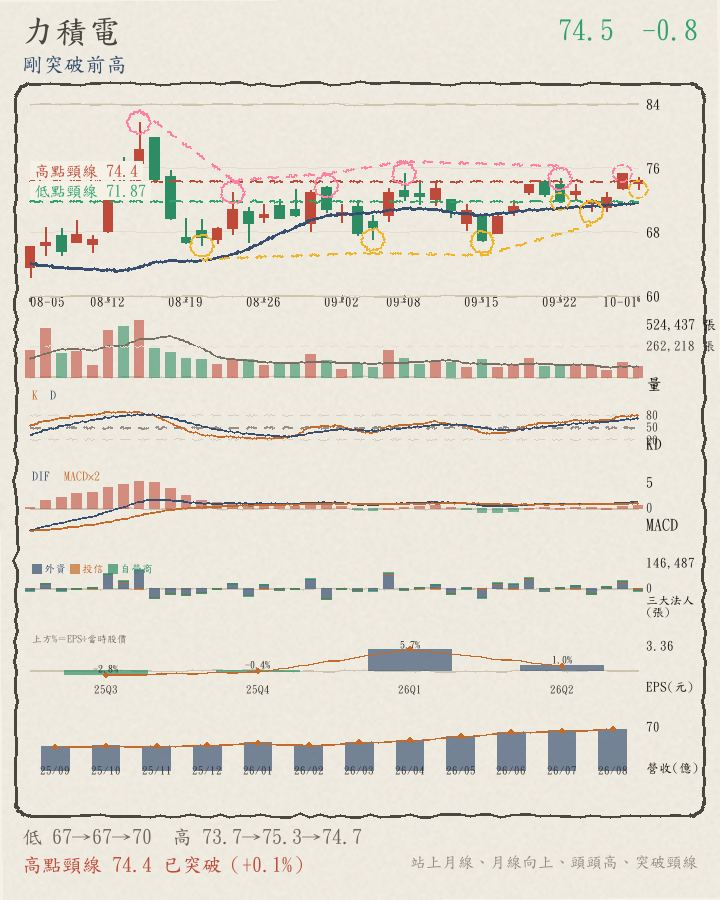
今天收黑、成交量也比平均少、站上月線 71.65，已站上高點頸線 74.4，高點還在墊高（但底部沒同步墊高）。
- 月線位置：收盤 74.5 在月線 71.65 之上；5 日線 73.44 也在月線之上（短均在上）；月線向上、5 日線向上
- 量能：成交量是 20 日均量的 0.76 倍，比 20 日均量少很多
- 關鍵價位：高點頸線 74.4 已站上；最近轉折高點 74.7（低於 0.3%）；最近轉折低點 70.5（高於 5.7%）
- 轉折結構：高點 73.7、75.3、74.7 墊高 0.9%（頭頭高），但低點 67、66.7、70.5 沒有同步墊高；還沒確認的轉折低點 09-22 71.8、10-01 73.3；還沒確認的轉折高點 09-30 75.4（圖上虛線小圈）
區間或轉弱 成交金額 66.98 億・全榜第 40 名（上市第 32 名）
好條件 0/8：無
不好條件 4/8：相對大盤弱、在月線之下、外資賣超、月線下彎
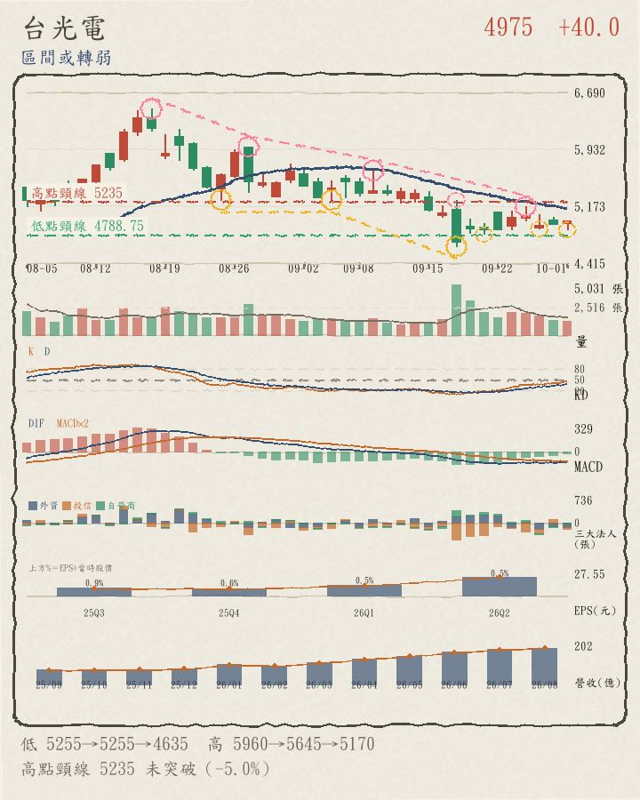
今天收紅、但成交量比平均少、跌破月線 5144.25，離高點頸線 5235 還差 5.0%，轉折還沒走出明顯方向。
- 月線位置：收盤 4975 在月線 5144.25 之下；5 日線 4980 也在月線之下（短均在下）；月線走平或向下、5 日線向上
- 量能：成交量是 20 日均量的 0.74 倍，比 20 日均量少很多；收紅但量縮，量價背離
- 關鍵價位：高點頸線 5235 還沒突破，差 5.0%；最近轉折高點 5170（低於 3.8%）；最近轉折低點 4635（高於 7.3%）
- 轉折結構：低點 5255、5255、4635 與高點 5960、5645、5170 都沒有明顯遞增，屬於區間震盪或轉弱；還沒確認的轉折低點 09-29 4870、10-01 4855；還沒確認的轉折高點 09-17 5255（圖上虛線小圈）
底部墊高、突破前高 成交金額 64.49 億・全榜第 41 名（上市第 33 名）
好條件 4/8：站上月線、月線向上、底底高、頭頭高
不好條件 4/8：今日下跌、相對大盤弱、量增下跌（出貨）、外資賣超
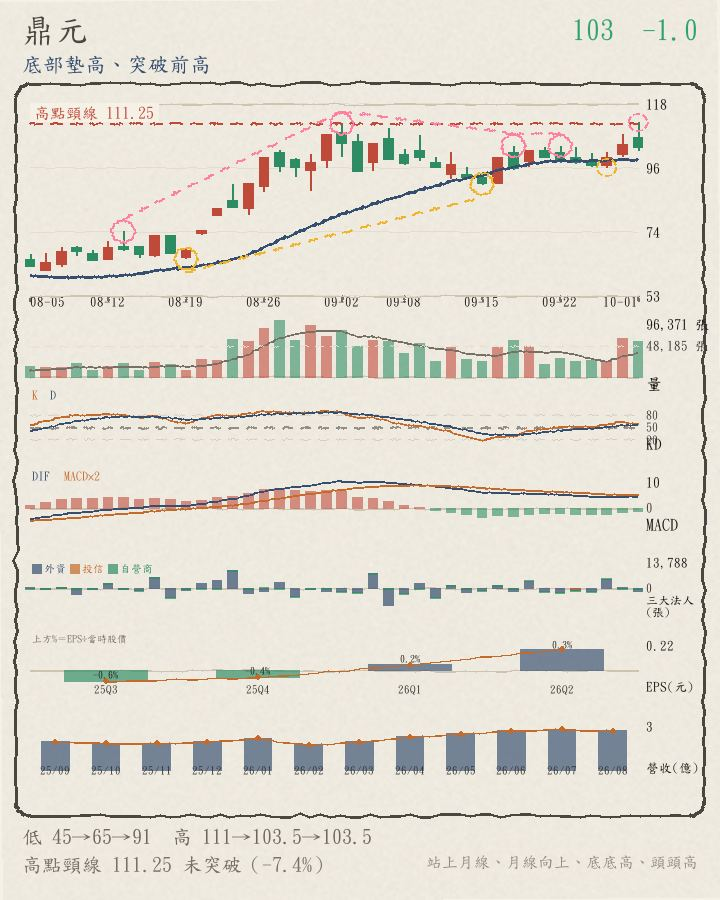
今天帶量收黑、站上月線 98.765，離高點頸線 111.25 還差 7.4%，轉折結構仍是底底高＋頭頭高。
- 月線位置：收盤 103 在月線 98.765 之上；5 日線 100.3 也在月線之上（短均在上）；月線向上、5 日線向上
- 量能：成交量是 20 日均量的 1.33 倍，比 20 日均量大不少；收黑卻量增，量價背離
- 關鍵價位：高點頸線 111.25 還沒突破，差 7.4%；最近轉折高點 103.5（低於 0.5%）；最近轉折低點 90.6（高於 13.7%）
- 轉折結構：低點 45.3、65.2、90.6 一路墊高 100.0%、高點 111、103.5、103.5 也一路墊高 7.7%，是底底高＋頭頭高；還沒確認的轉折低點 09-29 96.3；還沒確認的轉折高點 10-01 111.5（圖上虛線小圈）
上升趨勢（底底高＋頭頭高） 成交金額 62.46 億・全榜第 42 名（上市第 34 名）
好條件 6/8：站上月線、月線向上、底底高、頭頭高、相對大盤強、外資買超
不好條件 0/8：無
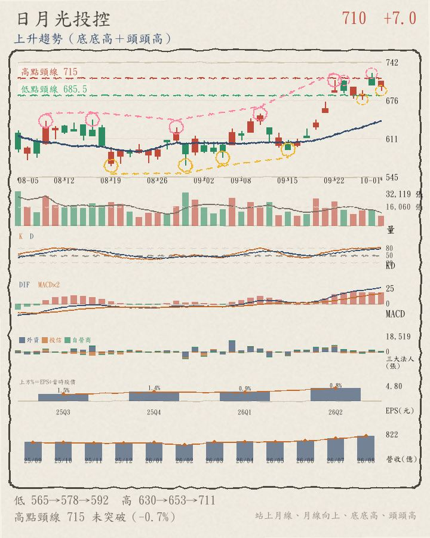
今天收紅、但成交量比平均少、站上月線 641.1，離高點頸線 715 還差 0.7%，轉折結構仍是底底高＋頭頭高。
- 月線位置：收盤 710 在月線 641.1 之上；5 日線 698.4 也在月線之上（短均在上）；月線向上、5 日線向上
- 量能：成交量是 20 日均量的 0.55 倍，比 20 日均量少很多；收紅但量縮，量價背離
- 關鍵價位：高點頸線 715 還沒突破，差 0.7%；最近轉折高點 711（低於 0.1%）；最近轉折低點 592（高於 19.9%）
- 轉折結構：低點 565、578、592 一路墊高 4.8%、高點 630、653、711 也一路墊高 12.9%，是底底高＋頭頭高；還沒確認的轉折低點 09-29 678、10-01 693；還沒確認的轉折高點 09-23 711、09-30 723（圖上虛線小圈）
剛突破前高 成交金額 58.6 億・全榜第 43 名（上市第 35 名）
好條件 7/8：站上月線、月線向上、頭頭高、突破頸線、相對大盤強、外資買超、量價攻擊（收紅＋大量）
不好條件 0/8：無
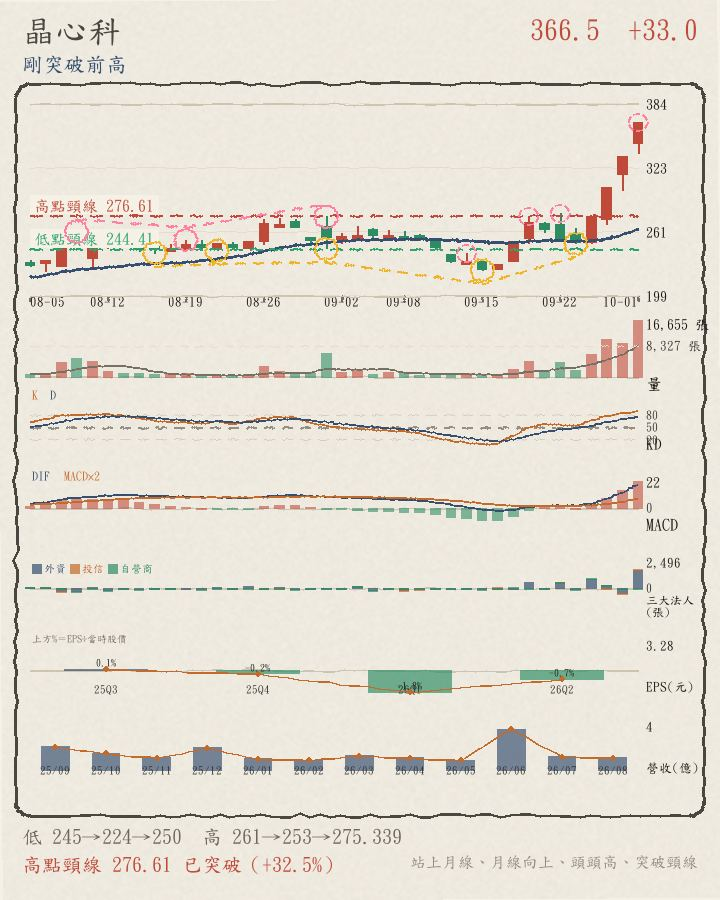
今天帶量收紅、站上月線 263.622，已站上高點頸線 276.61，高點還在墊高（但底部沒同步墊高）。
- 月線位置：收盤 366.5 在月線 263.622 之上；5 日線 306.1 也在月線之上（短均在上）；月線向上、5 日線向上
- 量能：成交量是 20 日均量的 5.55 倍，比 20 日均量大不少；收紅又量增，量價配合
- 關鍵價位：高點頸線 276.61 已站上；最近轉折高點 275.339（高於 33.1%）；最近轉折低點 249.5（高於 46.9%）
- 轉折結構：高點 261、253、275.339 墊高 33.1%（頭頭高），但低點 244.638、224、249.5 沒有同步墊高；還沒確認的轉折高點 09-22 278.5、10-01 366.5（圖上虛線小圈）
區間或轉弱 成交金額 58.24 億・全榜第 44 名（上市第 36 名）
好條件 3/8：月線向上、相對大盤強、量價攻擊（收紅＋大量）
不好條件 2/8：在月線之下、外資賣超

今天帶量收紅、跌破月線 977.35，離高點頸線 1025 還差 7.3%，轉折還沒走出明顯方向。
- 月線位置：收盤 950 在月線 977.35 之下；5 日線 905.6 也在月線之下（短均在下）；月線向上、5 日線走平或向下
- 量能：成交量是 20 日均量的 1.13 倍，比 20 日均量大一些；收紅又量增，量價配合
- 關鍵價位：高點頸線 1025 還沒突破，差 7.3%；最近轉折高點 1045（低於 9.1%）；最近轉折低點 906（高於 4.9%）
- 轉折結構：低點 628、961、906 與高點 1090、1140、1045 都沒有明顯遞增，屬於區間震盪或轉弱；還沒確認的轉折低點 09-29 869、10-01 871；還沒確認的轉折高點 09-21 1005、10-01 973（圖上虛線小圈）
上升趨勢（底底高＋頭頭高） 成交金額 56.52 億・全榜第 45 名（上市第 37 名）
好條件 6/8：站上月線、月線向上、底底高、頭頭高、突破頸線、外資買超
不好條件 2/8：今日下跌、相對大盤弱
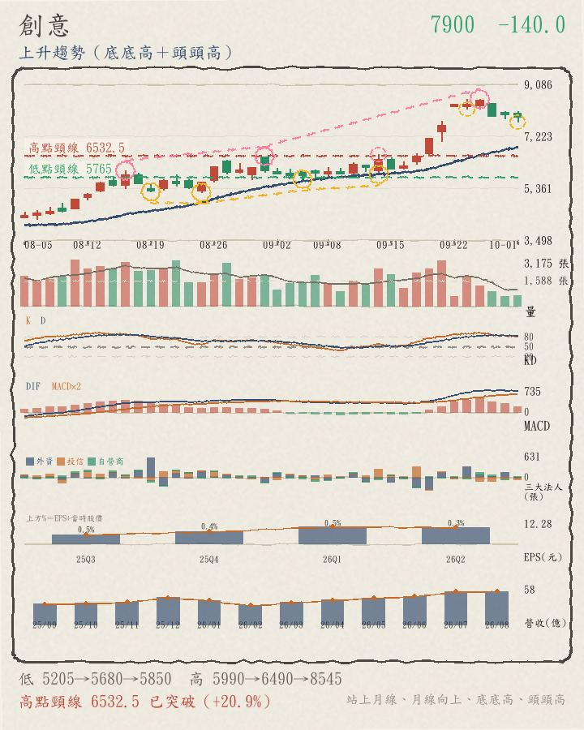
今天收黑、成交量也比平均少、站上月線 6834.5，已站上高點頸線 6532.5，轉折結構仍是底底高＋頭頭高。
- 月線位置：收盤 7900 在月線 6834.5 之上；5 日線 8155 也在月線之上（短均在上）；月線向上、5 日線向上
- 量能：成交量是 20 日均量的 0.43 倍，比 20 日均量少很多
- 關鍵價位：高點頸線 6532.5 已站上；最近轉折高點 8545（低於 7.5%）；最近轉折低點 5850（高於 35.0%）
- 轉折結構：低點 5205、5680、5850 一路墊高 12.4%、高點 5990、6490、8545 也一路墊高 42.7%，是底底高＋頭頭高；還沒確認的轉折低點 09-23 8200、10-01 7730；還沒確認的轉折高點 09-14 6575（圖上虛線小圈）
上升趨勢（底底高＋頭頭高） 成交金額 54.27 億・全榜第 47 名（上市第 38 名）
好條件 4/8：月線向上、底底高、頭頭高、外資買超
不好條件 5/8：今日下跌、相對大盤弱、在月線之下、量增下跌（出貨）、收盤跌破前一日低點
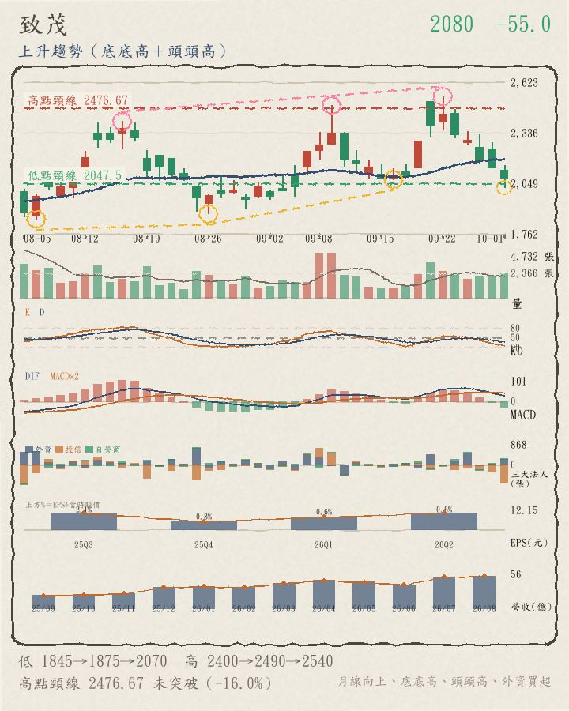
今天帶量收黑、跌破月線 2185.5，離高點頸線 2476.67 還差 16.0%，轉折結構仍是底底高＋頭頭高。
- 月線位置：收盤 2080 在月線 2185.5 之下；5 日線 2204 也在月線之上（短均在上）；月線向上、5 日線走平或向下
- 量能：成交量是 20 日均量的 1.20 倍，比 20 日均量大不少；收黑卻量增，量價背離
- 關鍵價位：高點頸線 2476.67 還沒突破，差 16.0%；最近轉折高點 2540（低於 18.1%）；最近轉折低點 2070（高於 0.5%）
- 轉折結構：低點 1845、1875、2070 一路墊高 12.2%、高點 2400、2490、2540 也一路墊高 5.8%，是底底高＋頭頭高；還沒確認的轉折低點 10-01 2025（圖上虛線小圈）
區間或轉弱 成交金額 50.72 億・全榜第 48 名（上市第 39 名）
好條件 3/8：站上月線、月線向上、外資買超
不好條件 4/8：今日下跌、相對大盤弱、量增下跌（出貨）、收盤跌破前一日低點
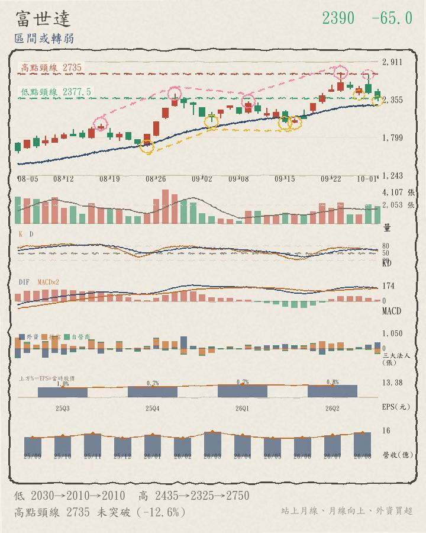
今天帶量收黑、站上月線 2274.25，離高點頸線 2735 還差 12.6%，轉折還沒走出明顯方向。
- 月線位置：收盤 2390 在月線 2274.25 之上；5 日線 2498 也在月線之上（短均在上）；月線向上、5 日線向上
- 量能：成交量是 20 日均量的 1.58 倍，比 20 日均量大不少；收黑卻量增，量價背離
- 關鍵價位：高點頸線 2735 還沒突破，差 12.6%；最近轉折高點 2750（低於 13.1%）；最近轉折低點 2010（高於 18.9%）
- 轉折結構：低點 2030、2010、2010 與高點 2435、2325、2750 都沒有明顯遞增，屬於區間震盪或轉弱；還沒確認的轉折低點 09-29 2420、10-01 2335；還沒確認的轉折高點 09-30 2720（圖上虛線小圈）
區間或轉弱 成交金額 49.47 億・全榜第 49 名（上市第 40 名）
好條件 2/8：月線向上、量價攻擊（收紅＋大量）
不好條件 3/8：相對大盤弱、在月線之下、外資賣超
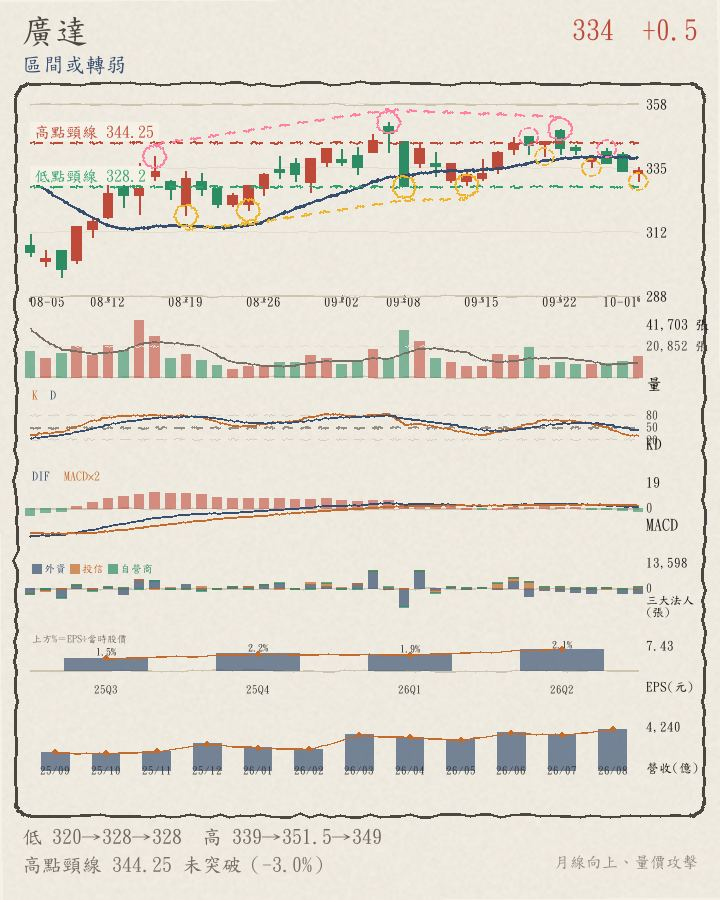
今天帶量收紅、跌破月線 338.525，離高點頸線 344.25 還差 3.0%，轉折還沒走出明顯方向。
- 月線位置：收盤 334 在月線 338.525 之下；5 日線 336.8 也在月線之下（短均在下）；月線向上、5 日線走平或向下
- 量能：成交量是 20 日均量的 1.06 倍，比 20 日均量大一些；收紅又量增，量價配合
- 關鍵價位：高點頸線 344.25 還沒突破，差 3.0%；最近轉折高點 349（低於 4.3%）；最近轉折低點 328.5（高於 1.7%）
- 轉折結構：低點 319.5、328、328.5 與高點 339、351.5、349 都沒有明顯遞增，屬於區間震盪或轉弱；還沒確認的轉折低點 09-24 335、10-01 330；還沒確認的轉折高點 09-18 346.5、09-29 342（圖上虛線小圈）
剛突破前高 成交金額 48.51 億・全榜第 50 名（上市第 41 名）
好條件 7/8：站上月線、月線向上、頭頭高、突破頸線、相對大盤強、外資買超、量價攻擊（收紅＋大量）
不好條件 0/8：無
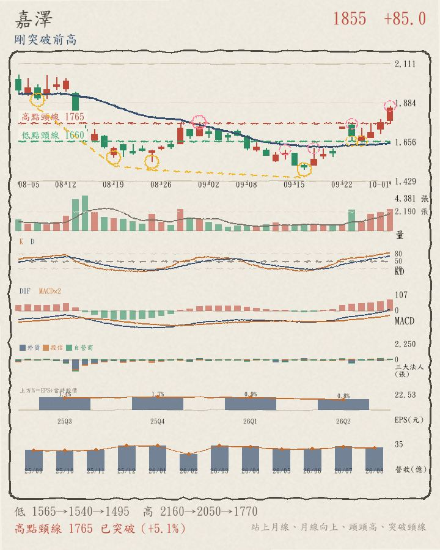
今天帶量收紅、站上月線 1648.25，已站上高點頸線 1765，高點還在墊高（但底部沒同步墊高）。
- 月線位置：收盤 1855 在月線 1648.25 之上；5 日線 1743 也在月線之上（短均在上）；月線向上、5 日線向上
- 量能：成交量是 20 日均量的 2.67 倍，比 20 日均量大不少；收紅又量增，量價配合
- 關鍵價位：高點頸線 1765 已站上；最近轉折高點 1770（高於 4.8%）；最近轉折低點 1495（高於 24.1%）
- 轉折結構：高點 2160、2050、1770 墊高 5.4%（頭頭高），但低點 1565、1540、1495 沒有同步墊高；還沒確認的轉折低點 09-23 1660、09-24 1660；還沒確認的轉折高點 09-23 1760、10-01 1865（圖上虛線小圈）
上升趨勢（底底高＋頭頭高） 成交金額 46.65 億・全榜第 51 名（上市第 42 名）
好條件 6/8：站上月線、月線向上、底底高、頭頭高、突破頸線、量價攻擊（收紅＋大量）
不好條件 2/8：相對大盤弱、外資賣超
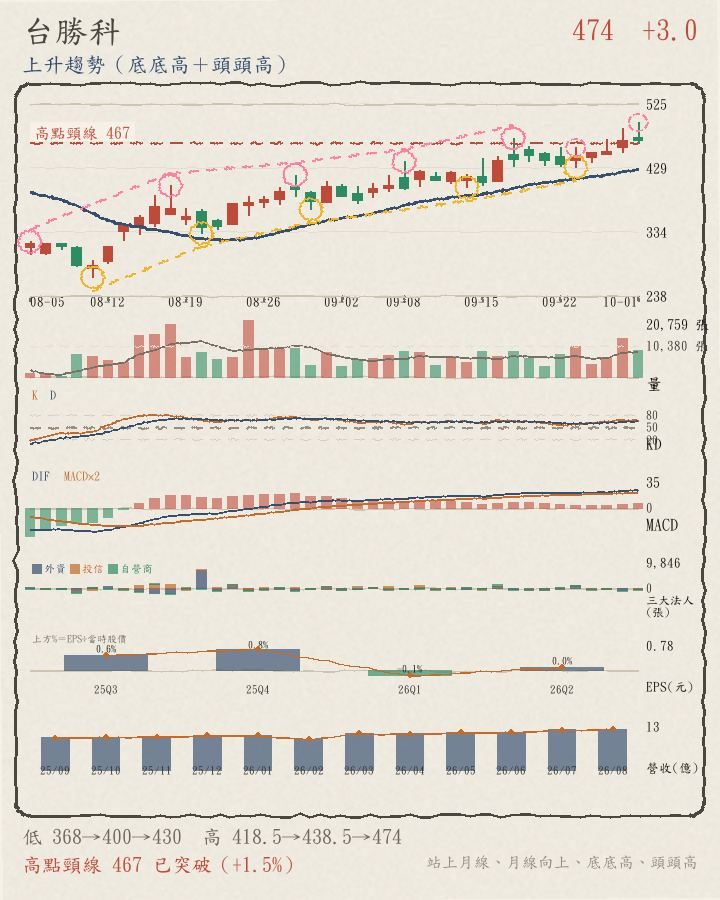
今天帶量收紅、站上月線 427.35，已站上高點頸線 467，轉折結構仍是底底高＋頭頭高。
- 月線位置：收盤 474 在月線 427.35 之上；5 日線 459.3 也在月線之上（短均在上）；月線向上、5 日線向上
- 量能：成交量是 20 日均量的 1.30 倍，比 20 日均量大不少；收紅又量增，量價配合
- 關鍵價位：高點頸線 467 已站上；最近轉折高點 474（高於 0.0%）；最近轉折低點 430.5（高於 10.1%）
- 轉折結構：低點 367.5、400、430.5 一路墊高 17.1%、高點 418.5、438.5、474 也一路墊高 13.3%，是底底高＋頭頭高；還沒確認的轉折高點 09-23 460、10-01 497.5（圖上虛線小圈）
區間或轉弱 成交金額 45.96 億・全榜第 54 名（上市第 43 名）
好條件 1/8：月線向上
不好條件 6/8：今日下跌、相對大盤弱、在月線之下、量增下跌（出貨）、外資賣超、收盤跌破前一日低點
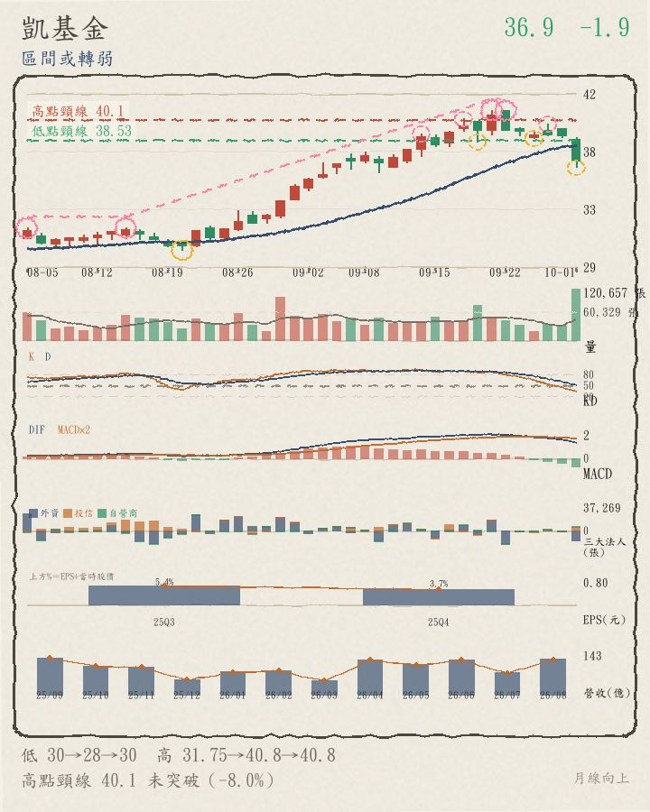
今天帶量收黑、跌破月線 38.098，離高點頸線 40.1 還差 8.0%，轉折還沒走出明顯方向。
- 月線位置：收盤 36.9 在月線 38.098 之下；5 日線 38.6 也在月線之上（短均在上）；月線向上、5 日線走平或向下
- 量能：成交量是 20 日均量的 2.63 倍，比 20 日均量大不少；收黑卻量增，量價背離
- 關鍵價位：高點頸線 40.1 還沒突破，差 8.0%；最近轉折高點 40.8（低於 9.6%）；最近轉折低點 30.05（高於 22.8%）
- 轉折結構：低點 29.5、28.35、30.05 與高點 31.75、40.8、40.8 都沒有明顯遞增，屬於區間震盪或轉弱；還沒確認的轉折低點 09-24 38.65、10-01 36.4；還沒確認的轉折高點 09-17 40.15、09-29 39.75（圖上虛線小圈）
高點墊高、底部不穩 成交金額 43.74 億・全榜第 57 名（上市第 44 名）
好條件 4/8：站上月線、月線向上、頭頭高、突破頸線
不好條件 2/8：相對大盤弱、外資賣超
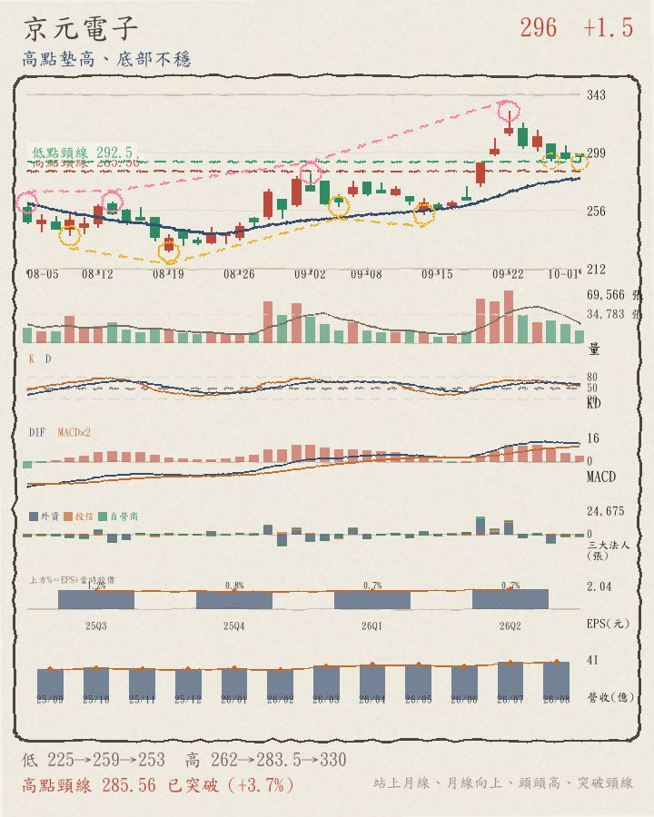
今天收紅、但成交量比平均少、站上月線 279.725，已站上高點頸線 285.56，高點還在墊高（但底部沒同步墊高）。
- 月線位置：收盤 296 在月線 279.725 之上；5 日線 300 也在月線之上（短均在上）；月線向上、5 日線向上
- 量能：成交量是 20 日均量的 0.55 倍，比 20 日均量少很多；收紅但量縮，量價背離
- 關鍵價位：高點頸線 285.56 已站上；最近轉折高點 330（低於 10.3%）；最近轉折低點 253（高於 17.0%）
- 轉折結構：高點 262、283.5、330 墊高 26.0%（頭頭高），但低點 225、259、253 沒有同步墊高；還沒確認的轉折低點 09-29 293、10-01 292（圖上虛線小圈）
區間或轉弱 成交金額 41.92 億・全榜第 61 名（上市第 45 名）
好條件 5/8：站上月線、月線向上、突破頸線、相對大盤強、外資買超
不好條件 0/8：無
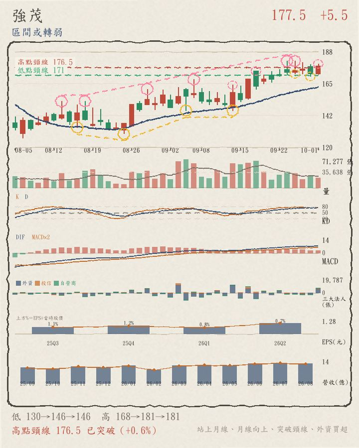
今天收紅、但成交量比平均少、站上月線 162.55，已站上高點頸線 176.5，轉折還沒走出明顯方向。
- 月線位置：收盤 177.5 在月線 162.55 之上；5 日線 174.5 也在月線之上（短均在上）；月線向上、5 日線向上
- 量能：成交量是 20 日均量的 0.57 倍，比 20 日均量少很多；收紅但量縮，量價背離
- 關鍵價位：高點頸線 176.5 已站上；最近轉折高點 181（低於 1.9%）；最近轉折低點 146（高於 21.6%）
- 轉折結構：低點 129.5、146、146 與高點 168、181、181 都沒有明顯遞增，屬於區間震盪或轉弱；還沒確認的轉折低點 09-24 172、09-30 170；還沒確認的轉折高點 09-17 174、10-01 179（圖上虛線小圈）
剛突破前高 成交金額 41.92 億・全榜第 62 名（上市第 46 名）
好條件 5/8：站上月線、月線向上、頭頭高、突破頸線、相對大盤強
不好條件 1/8：外資賣超
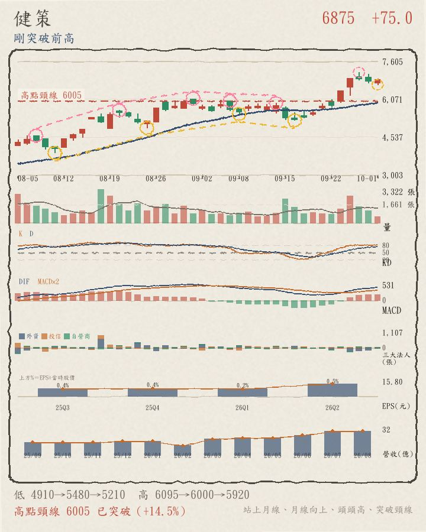
今天收紅、但成交量比平均少、站上月線 5927.5，已站上高點頸線 6005，高點還在墊高（但底部沒同步墊高）。
- 月線位置：收盤 6875 在月線 5927.5 之上；5 日線 6780 也在月線之上（短均在上）；月線向上、5 日線向上
- 量能：成交量是 20 日均量的 0.53 倍，比 20 日均量少很多；收紅但量縮，量價背離
- 關鍵價位：高點頸線 6005 已站上；最近轉折高點 5920（高於 16.1%）；最近轉折低點 5210（高於 32.0%）
- 轉折結構：高點 6095、6000、5920 墊高 20.9%（頭頭高），但低點 4910、5480、5210 沒有同步墊高；還沒確認的轉折低點 10-01 6665；還沒確認的轉折高點 09-29 7160（圖上虛線小圈）
區間或轉弱 成交金額 40.33 億・全榜第 63 名（上市第 47 名）
好條件 1/8：外資買超
不好條件 5/8：今日下跌、相對大盤弱、在月線之下、月線下彎、收盤跌破前一日低點
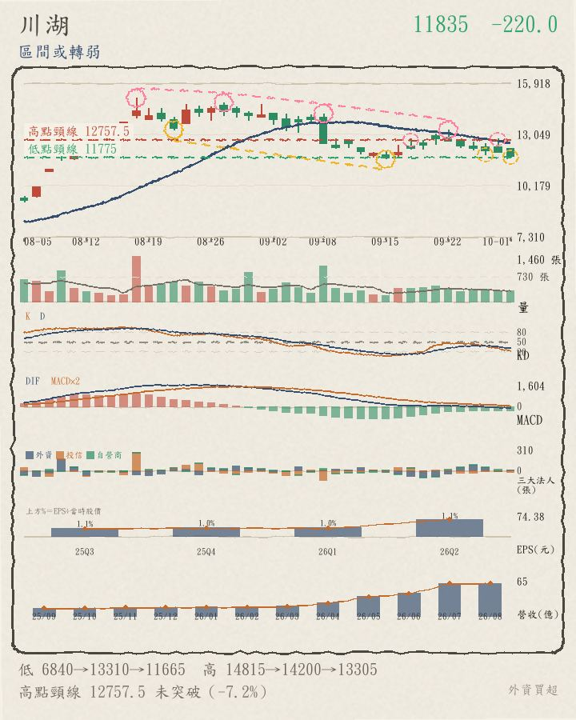
今天收黑、成交量也比平均少、跌破月線 12571.8，離高點頸線 12757.5 還差 7.2%，轉折還沒走出明顯方向。
- 月線位置：收盤 11835 在月線 12571.8 之下；5 日線 12149 也在月線之下（短均在下）；月線走平或向下、5 日線走平或向下
- 量能：成交量是 20 日均量的 0.83 倍，比 20 日均量少很多
- 關鍵價位：高點頸線 12757.5 還沒突破，差 7.2%；最近轉折高點 13305（低於 11.0%）；最近轉折低點 11665（高於 1.5%）
- 轉折結構：低點 6840、13310、11665 與高點 14815、14200、13305 都沒有明顯遞增，屬於區間震盪或轉弱；還沒確認的轉折低點 09-29 11900、10-01 11760；還沒確認的轉折高點 09-17 12730、09-30 12785（圖上虛線小圈）
區間或轉弱 成交金額 35.95 億・全榜第 66 名（上市第 48 名）
好條件 0/8：無
不好條件 4/8：相對大盤弱、在月線之下、外資賣超、月線下彎
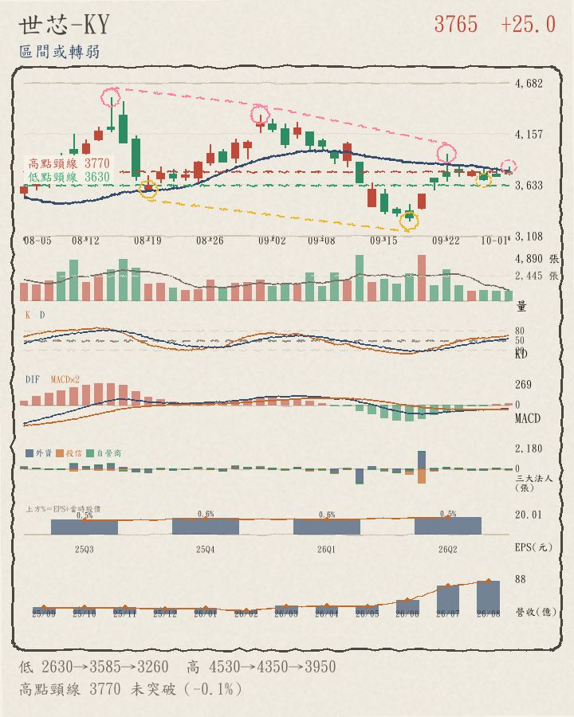
今天收紅、但成交量比平均少、跌破月線 3768.75，離高點頸線 3770 還差 0.1%，轉折還沒走出明顯方向。
- 月線位置：收盤 3765 在月線 3768.75 之下；5 日線 3744 也在月線之下（短均在下）；月線走平或向下、5 日線向上
- 量能：成交量是 20 日均量的 0.42 倍，比 20 日均量少很多；收紅但量縮，量價背離
- 關鍵價位：高點頸線 3770 還沒突破，差 0.1%；最近轉折高點 3950（低於 4.7%）；最近轉折低點 3260（高於 15.5%）
- 轉折結構：低點 2630、3585、3260 與高點 4530、4350、3950 都沒有明顯遞增，屬於區間震盪或轉弱；還沒確認的轉折低點 09-29 3675；還沒確認的轉折高點 10-01 3820（圖上虛線小圈）
上升趨勢（底底高＋頭頭高） 成交金額 33.83 億・全榜第 69 名（上市第 49 名）
好條件 4/8：月線向上、底底高、頭頭高、突破頸線
不好條件 6/8：今日下跌、相對大盤弱、在月線之下、量增下跌（出貨）、外資賣超、收盤跌破前一日低點
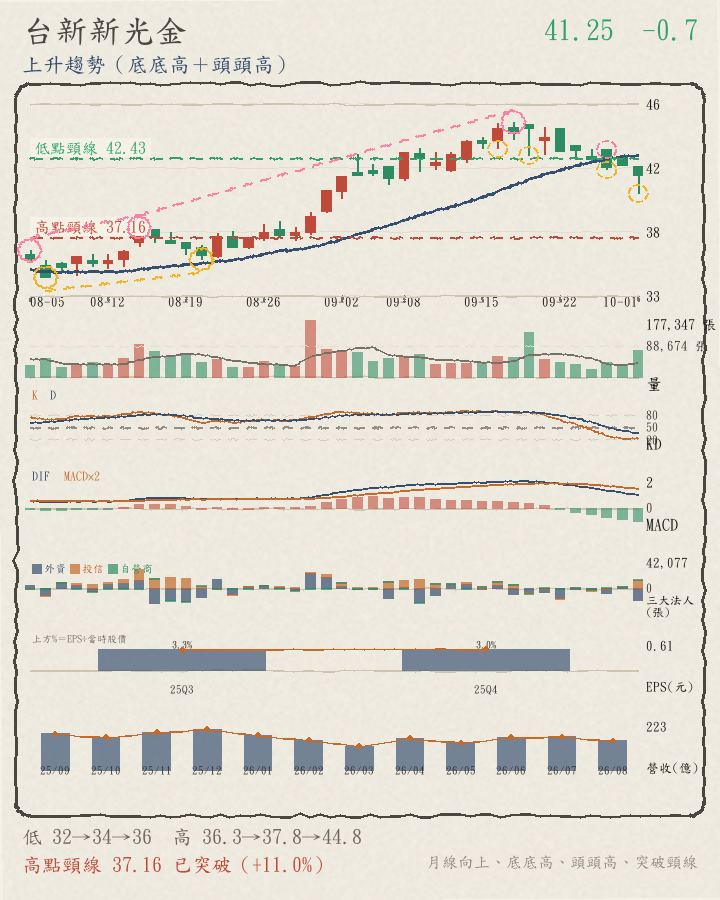
今天帶量收黑、跌破月線 42.61，已站上高點頸線 37.16，轉折結構仍是底底高＋頭頭高。
- 月線位置：收盤 41.25 在月線 42.61 之下；5 日線 42.09 也在月線之下（短均在下）；月線向上、5 日線走平或向下
- 量能：成交量是 20 日均量的 1.44 倍，比 20 日均量大不少；收黑卻量增，量價背離
- 關鍵價位：高點頸線 37.16 已站上；最近轉折高點 44.8（低於 7.9%）；最近轉折低點 35.7（高於 15.5%）
- 轉折結構：低點 31.85、34.5、35.7 一路墊高 12.1%、高點 36.3、37.8、44.8 也一路墊高 23.4%，是底底高＋頭頭高；還沒確認的轉折低點 09-29 41.65、10-01 40.1；還沒確認的轉折高點 09-29 43（圖上虛線小圈）
剛突破前高 成交金額 33.12 億・全榜第 70 名（上市第 50 名）
好條件 7/8：站上月線、月線向上、頭頭高、突破頸線、相對大盤強、外資買超、量價攻擊（收紅＋大量）
不好條件 0/8：無
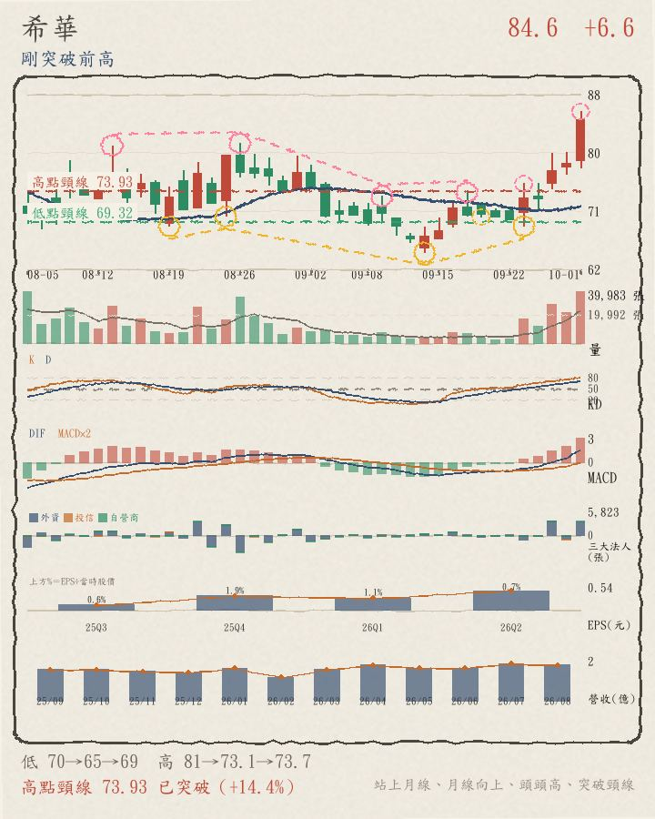
今天帶量收紅、站上月線 71.615，已站上高點頸線 73.93，高點還在墊高（但底部沒同步墊高）。
- 月線位置：收盤 84.6 在月線 71.615 之上；5 日線 77.04 也在月線之上（短均在上）；月線向上、5 日線向上
- 量能：成交量是 20 日均量的 4.42 倍，比 20 日均量大不少；收紅又量增，量價配合
- 關鍵價位：高點頸線 73.93 已站上；最近轉折高點 73.7（高於 14.8%）；最近轉折低點 68.6（高於 23.3%）
- 轉折結構：高點 81、73.1、73.7 墊高 16.4%（頭頭高），但低點 70.1、64.7、68.6 沒有同步墊高；還沒確認的轉折低點 09-18 70；還沒確認的轉折高點 09-23 75、10-01 85.8（圖上虛線小圈）
剛突破前高 成交金額 257.54 億・全榜第 6 名（上櫃第 1 名）
好條件 6/8：站上月線、月線向上、頭頭高、突破頸線、相對大盤強、量價攻擊（收紅＋大量）
不好條件 1/8：外資賣超
今天帶量收紅、站上月線 952.35，已站上高點頸線 1004.25，高點還在墊高（但底部沒同步墊高）。
- 月線位置：收盤 1085 在月線 952.35 之上；5 日線 992.6 也在月線之上（短均在上）；月線向上、5 日線向上
- 量能：成交量是 20 日均量的 2.44 倍，比 20 日均量大不少；收紅又量增，量價配合
- 關鍵價位：高點頸線 1004.25 已站上；最近轉折高點 1010（高於 7.4%）；最近轉折低點 872（高於 24.4%）
- 轉折結構：高點 1015、1015、1010 墊高 12.4%（頭頭高），但低點 931、875、872 沒有同步墊高；還沒確認的轉折低點 09-23 922、09-29 930；還沒確認的轉折高點 09-17 977、10-01 1135（圖上虛線小圈）
高點墊高、底部不穩 成交金額 239.17 億・全榜第 8 名（上櫃第 2 名）
好條件 4/8：站上月線、月線向上、頭頭高、突破頸線
不好條件 4/8：今日下跌、相對大盤弱、量增下跌（出貨）、外資賣超
今天帶量收黑、站上月線 113.575，已站上高點頸線 125，高點還在墊高（但底部沒同步墊高）。
- 月線位置：收盤 130 在月線 113.575 之上；5 日線 124 也在月線之上（短均在上）；月線向上、5 日線向上
- 量能：成交量是 20 日均量的 3.06 倍，比 20 日均量大不少；收黑卻量增，量價背離
- 關鍵價位：高點頸線 125 已站上；最近轉折高點 125（高於 4.0%）；最近轉折低點 100（高於 30.0%）
- 轉折結構：高點 117.5、119、125 墊高 6.4%（頭頭高），但低點 103.5、104、100 沒有同步墊高；還沒確認的轉折低點 09-23 114.5、09-24 114.5；還沒確認的轉折高點 09-23 125、10-01 139.5（圖上虛線小圈）
剛突破前高 成交金額 142.73 億・全榜第 16 名（上櫃第 3 名）
好條件 5/8：站上月線、月線向上、頭頭高、突破頸線、外資買超
不好條件 2/8：今日下跌、相對大盤弱
今天收黑、成交量也比平均少、站上月線 476.275，已站上高點頸線 512.5，高點還在墊高（但底部沒同步墊高）。
- 月線位置：收盤 538 在月線 476.275 之上；5 日線 514.4 也在月線之上（短均在上）；月線向上、5 日線向上
- 量能：成交量是 20 日均量的 0.91 倍，比 20 日均量少一些
- 關鍵價位：高點頸線 512.5 已站上；最近轉折高點 478（高於 12.6%）；最近轉折低點 482（高於 11.6%）
- 轉折結構：高點 492、492、478 墊高 14.2%（頭頭高），但低點 438.5、420、482 沒有同步墊高；還沒確認的轉折低點 09-18 467；還沒確認的轉折高點 09-23 518、10-01 546（圖上虛線小圈）
剛突破前高 成交金額 120.29 億・全榜第 19 名（上櫃第 4 名）
好條件 6/8：站上月線、月線向上、頭頭高、突破頸線、相對大盤強、量價攻擊（收紅＋大量）
不好條件 1/8：外資賣超
今天帶量收紅、站上月線 185.3，已站上高點頸線 188，高點還在墊高（但底部沒同步墊高）。
- 月線位置：收盤 211.5 在月線 185.3 之上；5 日線 196.2 也在月線之上（短均在上）；月線向上、5 日線向上
- 量能：成交量是 20 日均量的 3.71 倍，比 20 日均量大不少；收紅又量增，量價配合
- 關鍵價位：高點頸線 188 已站上；最近轉折高點 202（高於 4.7%）；最近轉折低點 181.5（高於 16.5%）
- 轉折結構：高點 187.5、187.5、202 墊高 9.7%（頭頭高），但低點 173、170、181.5 沒有同步墊高；還沒確認的轉折低點 09-18 180.5；還沒確認的轉折高點 09-17 191.5、10-01 221.5（圖上虛線小圈）
區間或轉弱 成交金額 107.97 億・全榜第 25 名（上櫃第 5 名）
好條件 5/8：站上月線、月線向上、相對大盤強、外資買超、量價攻擊（收紅＋大量）
不好條件 0/8：無
今天帶量收紅、站上月線 202.525，離高點頸線 230 還差 2.0%，轉折還沒走出明顯方向。
- 月線位置：收盤 225.5 在月線 202.525 之上；5 日線 214.3 也在月線之上（短均在上）；月線向上、5 日線走平或向下
- 量能：成交量是 20 日均量的 1.11 倍，比 20 日均量大一些；收紅又量增，量價配合
- 關鍵價位：高點頸線 230 還沒突破，差 2.0%；最近轉折高點 233（低於 3.2%）；最近轉折低點 171（高於 31.9%）
- 轉折結構：低點 155.5、152、171 與高點 203、203、233 都沒有明顯遞增，屬於區間震盪或轉弱；還沒確認的轉折低點 09-29 208；還沒確認的轉折高點 09-29 217、10-01 227（圖上虛線小圈）
上升趨勢（底底高＋頭頭高） 成交金額 94.12 億・全榜第 27 名（上櫃第 6 名）
好條件 7/8：站上月線、月線向上、底底高、頭頭高、相對大盤強、外資買超、量價攻擊（收紅＋大量）
不好條件 0/8：無
今天帶量收紅、站上月線 290.225，離高點頸線 324 還差 6.6%，轉折結構仍是底底高＋頭頭高。
- 月線位置：收盤 302.5 在月線 290.225 之上；5 日線 299.5 也在月線之上（短均在上）；月線向上、5 日線走平或向下
- 量能：成交量是 20 日均量的 1.66 倍，比 20 日均量大不少；收紅又量增，量價配合
- 關鍵價位：高點頸線 324 還沒突破，差 6.6%；最近轉折高點 331（低於 8.6%）；最近轉折低點 265.5（高於 13.9%）
- 轉折結構：低點 189.5、190.5、265.5 一路墊高 40.1%、高點 230、270.5、331 也一路墊高 43.9%，是底底高＋頭頭高；還沒確認的轉折低點 09-22 300、10-01 280.5；還沒確認的轉折高點 09-29 314、10-01 316（圖上虛線小圈）
底部墊高、未過前高 成交金額 88.04 億・全榜第 30 名（上櫃第 7 名）
好條件 5/8：站上月線、底底高、相對大盤強、外資買超、量價攻擊（收紅＋大量）
不好條件 1/8：月線下彎
今天帶量收紅、站上月線 500.85，離高點頸線 526.25 還差 4.0%，底部還在墊高（但高點沒同步創高）。
- 月線位置：收盤 505 在月線 500.85 之上；5 日線 501.2 也在月線之上（短均在上）；月線走平或向下、5 日線向上
- 量能：成交量是 20 日均量的 1.63 倍，比 20 日均量大不少；收紅又量增，量價配合
- 關鍵價位：高點頸線 526.25 還沒突破，差 4.0%；最近轉折高點 535（低於 5.6%）；最近轉折低點 477（高於 5.9%）
- 轉折結構：低點 399、469.5、477 墊高 19.5%（底底高），但高點 462、564、535 沒有同步創高；還沒確認的轉折低點 09-23 490、09-30 495；還沒確認的轉折高點 09-29 519、10-01 521（圖上虛線小圈）
剛突破前高 成交金額 67.93 億・全榜第 39 名（上櫃第 8 名）
好條件 5/8：站上月線、月線向上、頭頭高、突破頸線、相對大盤強
不好條件 1/8：外資賣超
今天收紅、但成交量比平均少、站上月線 1409.75，已站上高點頸線 1530，高點還在墊高（但底部沒同步墊高）。
- 月線位置：收盤 1535 在月線 1409.75 之上；5 日線 1499 也在月線之上（短均在上）；月線向上、5 日線向上
- 量能：成交量是 20 日均量的 0.63 倍，比 20 日均量少很多；收紅但量縮，量價背離
- 關鍵價位：高點頸線 1530 已站上；最近轉折高點 1460（高於 5.1%）；最近轉折低點 1275（高於 20.4%）
- 轉折結構：高點 1565、1430、1460 墊高 6.2%（頭頭高），但低點 1395、1295、1275 沒有同步墊高；還沒確認的轉折低點 09-14 1320、09-29 1465；還沒確認的轉折高點 09-24 1530、09-30 1550（圖上虛線小圈）
上升趨勢（底底高＋頭頭高） 成交金額 55.66 億・全榜第 46 名（上櫃第 9 名）
好條件 6/8：站上月線、月線向上、底底高、頭頭高、突破頸線、外資買超
不好條件 3/8：今日下跌、相對大盤弱、量增下跌（出貨）
今天帶量收黑、站上月線 117.425，已站上高點頸線 123.5，轉折結構仍是底底高＋頭頭高。
- 月線位置：收盤 145 在月線 117.425 之上；5 日線 134.5 也在月線之上（短均在上）；月線向上、5 日線向上
- 量能：成交量是 20 日均量的 4.74 倍，比 20 日均量大不少；收黑卻量增，量價背離
- 關鍵價位：高點頸線 123.5 已站上；最近轉折高點 123（高於 17.9%）；最近轉折低點 104（高於 39.4%）
- 轉折結構：低點 96.2、103、104 一路墊高 8.1%、高點 111、114.5、123 也一路墊高 10.8%，是底底高＋頭頭高；還沒確認的轉折低點 09-23 113.5、10-01 139.5；還沒確認的轉折高點 09-21 124、10-01 158（圖上虛線小圈）
區間或轉弱 成交金額 46.57 億・全榜第 52 名（上櫃第 10 名）
好條件 2/8：月線向上、外資買超
不好條件 6/8：跌破前低、今日下跌、相對大盤弱、在月線之下、量增下跌（出貨）、收盤跌破前一日低點
今天帶量收黑、跌破月線 5439，跌破前一個轉折低點（高點頸線 5744 還在收盤上方），轉折還沒走出明顯方向。
- 月線位置：收盤 5030 在月線 5439 之下；5 日線 5275 也在月線之下（短均在下）；月線向上、5 日線走平或向下
- 量能：成交量是 20 日均量的 1.17 倍，比 20 日均量大不少；收黑卻量增，量價背離
- 關鍵價位：高點頸線 5744 還沒突破、還在收盤上方 12.4%；最近轉折高點 5860（低於 14.2%）；最近轉折低點 5090（低於 1.2%）
- 轉折結構：低點 4730、5365、5090 與高點 5585、6060、5860 都沒有明顯遞增，屬於區間震盪或轉弱；還沒確認的轉折低點 09-17 5485、10-01 4995；還沒確認的轉折高點 09-21 5850、09-24 5625（圖上虛線小圈）
區間或轉弱 成交金額 46.32 億・全榜第 53 名（上櫃第 11 名）
好條件 0/8：無
不好條件 6/8：今日下跌、相對大盤弱、在月線之下、外資賣超、月線下彎、收盤跌破前一日低點
今天收黑、成交量也比平均少、跌破月線 2851，離高點頸線 2910 還差 8.6%，轉折還沒走出明顯方向。
- 月線位置：收盤 2660 在月線 2851 之下；5 日線 2677 也在月線之下（短均在下）；月線走平或向下、5 日線走平或向下
- 量能：成交量是 20 日均量的 0.61 倍，比 20 日均量少很多
- 關鍵價位：高點頸線 2910 還沒突破，差 8.6%；最近轉折高點 2950（低於 9.8%）；最近轉折低點 2585（高於 2.9%）
- 轉折結構：低點 1450、2650、2585 與高點 3600、2930、2950 都沒有明顯遞增，屬於區間震盪或轉弱；還沒確認的轉折低點 10-01 2605；還沒確認的轉折高點 09-17 2930、09-29 2735（圖上虛線小圈）
底部墊高、突破前高 成交金額 45.33 億・全榜第 55 名（上櫃第 12 名）
好條件 8/8：站上月線、月線向上、底底高、頭頭高、突破頸線、相對大盤強、外資買超、量價攻擊（收紅＋大量）
不好條件 0/8：無

今天帶量收紅、站上月線 118.675，已站上高點頸線 129.75，轉折結構仍是底底高＋頭頭高。
- 月線位置：收盤 151 在月線 118.675 之上；5 日線 140.5 也在月線之上（短均在上）；月線向上、5 日線向上
- 量能：成交量是 20 日均量的 1.33 倍，比 20 日均量大不少；收紅又量增，量價配合
- 關鍵價位：高點頸線 129.75 已站上；最近轉折高點 98.9（高於 52.7%）；最近轉折低點 115（高於 31.3%）
- 轉折結構：低點 81.8、84.8、115 一路墊高 40.6%、高點 163、99.4、98.9 也一路墊高 52.7%，是底底高＋頭頭高；還沒確認的轉折低點 09-23 122、09-30 134；還沒確認的轉折高點 09-24 144.5、10-01 151（圖上虛線小圈）
高點墊高、底部不穩 成交金額 44.31 億・全榜第 56 名（上櫃第 13 名）
好條件 4/8：站上月線、月線向上、頭頭高、突破頸線
不好條件 4/8：今日下跌、相對大盤弱、外資賣超、收盤跌破前一日低點
今天收黑、成交量也比平均少、站上月線 1456.75，已站上高點頸線 1080，高點還在墊高（但底部沒同步墊高）。
- 月線位置：收盤 1525 在月線 1456.75 之上；5 日線 1598 也在月線之上（短均在上）；月線向上、5 日線向上
- 量能：成交量是 20 日均量的 0.75 倍，比 20 日均量少很多
- 關鍵價位：高點頸線 1080 已站上；最近轉折高點 1750（低於 12.9%）；最近轉折低點 1240（高於 23.0%）
- 轉折結構：高點 1080、1505、1750 墊高 62.0%（頭頭高），但低點 955、1300、1240 沒有同步墊高；還沒確認的轉折低點 10-01 1480；還沒確認的轉折高點 09-22 1630（圖上虛線小圈）
剛突破前高 成交金額 43.08 億・全榜第 58 名（上櫃第 14 名）
好條件 5/8：站上月線、月線向上、頭頭高、突破頸線、外資買超
不好條件 4/8：今日下跌、相對大盤弱、量增下跌（出貨）、收盤跌破前一日低點
今天帶量收黑、站上月線 252.675，已站上高點頸線 172.5，高點還在墊高（但底部沒同步墊高）。
- 月線位置：收盤 363.5 在月線 252.675 之上；5 日線 337.5 也在月線之上（短均在上）；月線向上、5 日線向上
- 量能：成交量是 20 日均量的 3.84 倍，比 20 日均量大不少；收黑卻量增，量價背離
- 關鍵價位：高點頸線 172.5 已站上；最近轉折高點 172（高於 111.3%）；最近轉折低點 155（高於 134.5%）
- 轉折結構：高點 163.5、173、172 墊高 123.5%（頭頭高），但低點 145.5、156、155 沒有同步墊高；還沒確認的轉折低點 09-23 290、10-01 342；還沒確認的轉折高點 09-22 316、10-01 384.5（圖上虛線小圈）
高點墊高、底部不穩 成交金額 42.99 億・全榜第 59 名（上櫃第 15 名）
好條件 6/8：站上月線、月線向上、頭頭高、相對大盤強、外資買超、量價攻擊（收紅＋大量）
不好條件 0/8：無
今天帶量收紅、站上月線 163.55，離高點頸線 185 還差 0.3%，高點還在墊高（但底部沒同步墊高）。
- 月線位置：收盤 184.5 在月線 163.55 之上；5 日線 177.5 也在月線之上（短均在上）；月線向上、5 日線向上
- 量能：成交量是 20 日均量的 1.50 倍，比 20 日均量大不少；收紅又量增，量價配合
- 關鍵價位：高點頸線 185 還沒突破，差 0.3%；最近轉折高點 163（高於 13.2%）；最近轉折低點 152.5（高於 21.0%）
- 轉折結構：高點 157、158、163 墊高 3.8%（頭頭高），但低點 146.5、147、152.5 沒有同步墊高；還沒確認的轉折低點 09-24 168、10-01 178.5；還沒確認的轉折高點 09-22 181.5、10-01 188.5（圖上虛線小圈）
剛突破前高 成交金額 41.99 億・全榜第 60 名（上櫃第 16 名）
好條件 7/8：站上月線、月線向上、頭頭高、突破頸線、相對大盤強、外資買超、量價攻擊（收紅＋大量）
不好條件 0/8：無
今天帶量收紅、站上月線 726.1，已站上高點頸線 805，高點還在墊高（但底部沒同步墊高）。
- 月線位置：收盤 814 在月線 726.1 之上；5 日線 774.2 也在月線之上（短均在上）；月線向上、5 日線向上
- 量能：成交量是 20 日均量的 3.22 倍，比 20 日均量大不少；收紅又量增，量價配合
- 關鍵價位：高點頸線 805 已站上；最近轉折高點 714（高於 14.0%）；最近轉折低點 687（高於 18.5%）
- 轉折結構：高點 730、714、714 墊高 14.0%（頭頭高），但低點 696、700、687 沒有同步墊高；還沒確認的轉折低點 09-21 709；還沒確認的轉折高點 09-29 796、10-01 814（圖上虛線小圈）
區間或轉弱 成交金額 37.93 億・全榜第 64 名（上櫃第 17 名）
好條件 1/8：站上月線
不好條件 5/8：今日下跌、相對大盤弱、外資賣超、月線下彎、收盤跌破前一日低點
今天收黑、成交量也比平均少、站上月線 2070，離高點頸線 2196.25 還差 3.9%，轉折還沒走出明顯方向。
- 月線位置：收盤 2110 在月線 2070 之上；5 日線 2143 也在月線之上（短均在上）；月線走平或向下、5 日線向上
- 量能：成交量是 20 日均量的 0.58 倍，比 20 日均量少很多
- 關鍵價位：高點頸線 2196.25 還沒突破，差 3.9%；最近轉折高點 2350（低於 10.2%）；最近轉折低點 1900（高於 11.1%）
- 轉折結構：低點 1905、1970、1900 與高點 2195、2160、2350 都沒有明顯遞增，屬於區間震盪或轉弱；還沒確認的轉折低點 09-29 2080、10-01 2105；還沒確認的轉折高點 09-30 2215（圖上虛線小圈）
底部墊高、未過前高 成交金額 36.47 億・全榜第 65 名（上櫃第 18 名）
好條件 1/8：底底高
不好條件 4/8：相對大盤弱、在月線之下、外資賣超、月線下彎
今天收黑、成交量也比平均少、跌破月線 119.764，離高點頸線 120.5 還差 3.7%，底部還在墊高（但高點沒同步創高）。
- 月線位置：收盤 116 在月線 119.764 之下；5 日線 116.8 也在月線之下（短均在下）；月線走平或向下、5 日線走平或向下
- 量能：成交量是 20 日均量的 0.51 倍，比 20 日均量少很多
- 關鍵價位：高點頸線 120.5 還沒突破，差 3.7%；最近轉折高點 129.5（低於 10.4%）；最近轉折低點 111（高於 4.5%）
- 轉折結構：低點 56.2856、108.571、111 墊高 97.2%（底底高），但高點 89.4284、135、129.5 沒有同步創高；還沒確認的轉折低點 09-29 113、10-01 113.5；還沒確認的轉折高點 09-16 121.5、10-01 119.5（圖上虛線小圈）
高點墊高、底部不穩 成交金額 35.32 億・全榜第 67 名（上櫃第 19 名）
好條件 5/8：站上月線、月線向上、頭頭高、突破頸線、量價攻擊（收紅＋大量）
不好條件 2/8：相對大盤弱、外資賣超
今天帶量收紅、站上月線 240.775，已站上高點頸線 241.5，高點還在墊高（但底部沒同步墊高）。
- 月線位置：收盤 245.5 在月線 240.775 之上；5 日線 245.7 也在月線之上（短均在上）；月線向上、5 日線走平或向下
- 量能：成交量是 20 日均量的 1.18 倍，比 20 日均量大不少；收紅又量增，量價配合
- 關鍵價位：高點頸線 241.5 已站上；最近轉折高點 289.5（低於 15.2%）；最近轉折低點 220（高於 11.6%）
- 轉折結構：高點 239.5、251.5、289.5 墊高 20.9%（頭頭高），但低點 202、222.5、220 沒有同步墊高；還沒確認的轉折低點 09-29 238、09-30 238；還沒確認的轉折高點 09-30 247（圖上虛線小圈）
底部墊高、突破前高 成交金額 34.33 億・全榜第 68 名（上櫃第 20 名）
好條件 5/8：站上月線、月線向上、底底高、頭頭高、突破頸線
不好條件 4/8：今日下跌、相對大盤弱、外資賣超、收盤跌破前一日低點
今天收黑、成交量也比平均少、站上月線 2826.75，已站上高點頸線 2797.5，轉折結構仍是底底高＋頭頭高。
- 月線位置：收盤 3245 在月線 2826.75 之上；5 日線 3278 也在月線之上（短均在上）；月線向上、5 日線向上
- 量能：成交量是 20 日均量的 0.74 倍，比 20 日均量少很多
- 關鍵價位：高點頸線 2797.5 已站上；最近轉折高點 2875（高於 12.9%）；最近轉折低點 2530（高於 28.3%）
- 轉折結構：低點 1995、2090、2530 一路墊高 26.8%、高點 2825、2720、2875 也一路墊高 26.4%，是底底高＋頭頭高；還沒確認的轉折低點 09-29 3145、10-01 3215；還沒確認的轉折高點 09-23 3350、09-30 3635（圖上虛線小圈）